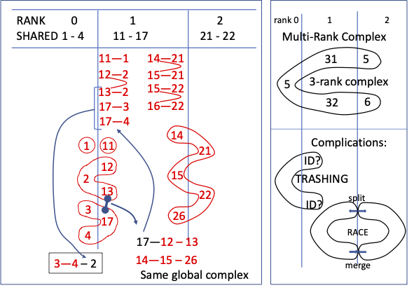
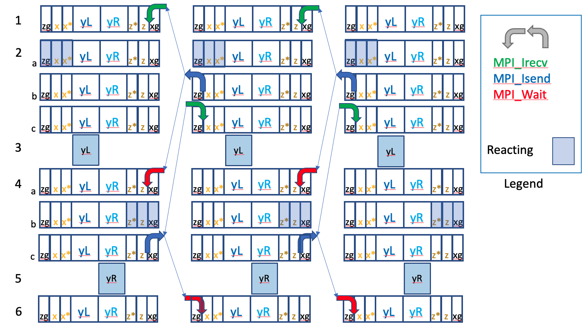

\ / \ / Non-Equilibrium \ / \ /
--O-- --O-- Reaction Diffusion --O-- --O--
/ \ / \ Self-Assembly Simulator / \ / \5. Data Structures (for Serial NERDSS)
6. Data Structure Modifications and Functions for Parallel NERDSS
9. Fully Parallel (Concurrent) Computing Model
10. Debugging Parallel Execution
11. Debugging Support Macros and Functions
prun.sh– MPI Terms
rank - Processing unit. A parallel execution consists of multiple MPI ranks executing as multiple processes. Generally the number of ranks specified is no larger than the number of cores.
Non-blocking send/receive - Asynchronous send/receive, i.e. sending/receiving in background during the processing.
– Zone Terms
x-bin - Cells/SubVolumes are represented by an integer triplet {i,j,k}, in x, y and z directions. x-bin is the “i” value (in the x direction) for the cell. [Each cell is numbered i+jN+kN*N, where N is the number of cells in a direction (Nx=Ny=Nz=N).]
Zone - specified as an x-bin number, but representing all cells within the triplet {x-bin,#,#}.
Ghost Zone - Zone copied to a rank for accessing a neighbor’s data during the rank’s processing.
Rank-owned Zones - Zones assigned to a rank for processing. This does not include ghost zones.
Border Zone - Rank-owned zone next to the ghost zone.
Shared Zones - Border zone + ghost zone pair. Note that a rank in general has both left and right shared zones.
– Complex Terms
multi-rank complex - A complex spread over multiple ranks (“shared complex” in code comments)
complex portion - The part of a multi-rank complex (molecules and interfaces) belonging to a rank
holder rank - A rank that has a complex portion
owner rank - Designated holder rank that makes the decisions for multi-rank complex action requests
complex merge - Association (connection) of two unconnected complexes into a single complex.
complex split - Split up (disconnection) of a multi-rank complex into two unconnected complexes.
IL - (Implicit Lipid)
com or c - (complex)
mol or m - (molecule)
ifc - (interface)
mem - (member)
S - (Serial) means value is from input file parsed as serial input – the initial complexList, moleculeList etc. contain “serial-specific” values
R - (Rank) means value is prepared for a rank – after partitioning the serial complexList, moleculeList etc. will have partitioned, “rank-specific” values.
i - Iterator, usually abbreviated identifiers (molecule | complex | ifc) and (Serial | Rank) , e.g. i_mol_S iterator
Notation: The memberList, complexList, or moleculeList code object name may also be read as member list, complex list, or molecule list".
This documents is for any developer interested in parallel execution of the NERDSS simulator.
The main loop of the simulator iterates over time steps, repeating the same operations:
The code for these operations can be executed, “as is”, in either in parallel or serial mode. Due to the complexity of the NERDSS algorithm, the “MPI” version reuses all of the original serial code, with minimal changes for parallel mode. Effectively, the serial code for the operations have become execution kernels for each rank’s set of molecules. One can think of the parallelism as each rank (process) executing instructions almost as if it were a single (serial) NERDSS run on the system.
The preservation of serial code means that each rank must number (and track) its partition of molecules (and complexes) locally from a “fresh” base of numbers (as if its molecules were entered from input as a separate serial run). So, each rank will begin execution on as set of molecules (and complexes) with numbers {0, 1, 2,…}. The number is a local index that identifies the molecule (and complex) of a rank. A corresponding id is used to map between the local index and an assigned global id which is a unique number across all ranks. The id is used for tracking movement across ranks.
Variables and structures have been added where necessary, and additional functions inserted to accommodate molecule partitioning and coordinating among the MPI ranks. In particular, generic packing/unpacking functions (named as serialization/deserialization functions in the code) are the primary mechanism for preparing data to be shared with other ranks. (Since NERDSS uses its own functions for packing/unpacking data, the more complicated and expensive packing with MPI Derived Datatypes is avoided.)
It is important to understand that input is first parsed as though a serial (S) run is to be executed. The usual serial structures (e.g. for moleculeList and complexList here) ALL have unique complexes and molecules, as well as their indices. A text reference to list item (whether structure or index) will often be specified as “serial-specific” and code references will be suffixed with an "_S" (as in i_com_S for the complex iterator of complexList).
In the partitioning process, lists holding the partitioned structures are appended with “Rank” in the code (e.g. moleculeListRank and complexListRank). A text reference will often described as “rank-specific” and text references to the iterator are often specified with an appended "_R" (as in i_com_R for the complex iterator of complexListRank).
After the input has been partitioned for the ranks (by rank 0), it is broadcast to each rank, and effectively the serial lists and structures are overwritten with the corresponding rank-specific (parallel) versions. That is the “old” serial lists and structures become the “new” parallel lists and structures.
The following chapters provide useful descriptions of concepts, organizational components, structures, and operations for understanding the parallelization. First, the Parallel Algorithm and Data Partitioning are covered in the Basic Parallel Concepts chapter. This is followed by two chapters that describe key serial-code Data Structures, and their adaptation for parallel execution (Data Structures and Data Structure Modifications and Functions for Parallel NERDSS). Next, the integration of the communications layer (operations) between ranks is described for single- and bi-molecule complexes in the Simulation Parallelization with MPI chapter. Additional text is devoted to managing larger complexes in the Complex Management chapter. Also in this chapter, “Action” Messaging for multi-molecule complexes is introduced. This communication paradigm aggregates action requests on a rank and broadcasts them to ranks that need to take actions on complexes (and respond).
This is followed by the communications algorithm for a fully concurrent computing model for NERDS in the Communication Patterns, Fully Concurrent (FC) Parallel Computing Model chapter. The document ends with two chapters on debugging, Debugging Parallel Execution and Debugging Support Macros and Functions. These chapters present the tools any parallel developer will need in the daunting task of debugging NERDSS (any) parallel code. The Appendix presents a script for running (and debugging) the (even-odd) parallel NERDSS. It also presents a prototype implementation for the Full Concurrent (FC) model communication, and describes how to compile and execute the code, FC_Communications.cpp.
The parallelization of the NERDSS algorithm is accomplished by partitioning molecules among processes and communicating between processes through MPI (Message Passing Interface).
In order to make the system scalable, each rank performs as much work independently as possible, and minimizes (point-to-point and collective) communications. Additionally, non-blocking (asynchronous) communications have been implemented (where reasonable). The latter allows each rank to work on its portion of data, while communicating with neighboring ranks for updating data shared by neighboring ranks.
Molecules are a basic unit for evolving the simulation since they consist of a Center of Mass (CoM) with rigid attachment points (interfaces). However, molecules interact through interfaces which have reaction properties (capabilities), and may have prescribed states. When molecules are connected (bonded) through interfaces, the properties of the “aggregate” is represented as a single complex. These three components are illustrated below.
3 Molecules O O O
\ / | \ /
12 Interfaces O-- --O-- --O
/ | \
1 Complex O-----O-----O
Figure 1. Three molecules (top), each with 4 interfaces(middle), appearing as a 3-molecule complex (bottom) connected through interfaces.
In serial (shared-memory) executions, looping over molecular pairs for possible interactions between interfaces and attachment to a complex is trivial. In parallel execution mode, each rank loops over possible molecular-pair interactions of molecules (it “owns”), using local molecular and complex indexes and the serial functions (kernels). There are complications, though:
1.) The location of molecules in a complex may span across ranks. (Processing of a multi-rank complex can be assigned to the rank’s “complex owner”, the rank where the complex CoM (Cntr. of Mass) is located.) Bimolecular complex processing is easily handled with “border zone” interaction processing– which involves sharing data of molecular reaction size border zones of the parallel-partitioned simulation volume. Processing complexes larger than bi-molecule may involve processing beyond the border zones, and require Complex Management to coordinate additional communication.)
2.) The distance between molecule A owned by rank j may be close enough to molecule B owned by adjacent rank k to react. (Data for a zone containing molecule A of rank j, and a zone containing molecule B of rank k are shared. Hence, the proximal distances can be observed; and the pair considered for interaction by only one rank.)
3.) At the finest granularity, one of a molecule’s interface locations may be in one rank, with the molecule’s Center of Mass (COM) in another rank. (Processing occurs by the rank “owner”, the rank where the molecule’s CoM is located.)
The primary purpose of MPI communication is to update shared data of the border zones for all types of reactions that don’t involve complexes larger than two molecules. Otherwise, Complex Management is employed which involves more than just updating shared data.
In the serial code the iterations over the complete NxN/2 space of pairwise molecules interactions is avoided by subdividing the whole volume and evaluating interactions within a unit and its neighbors.
The simulation volume is divided into cubes called cells (or subvolumes). This same division is used for partitioning molecules among ranks (processes). The cells are indexed as in a 3-D matrix as 3-tuples {x,y,z}, with the x-dimension indexed first. With the knowledge of the bounds for each cell, molecules are binned into the cells which contain lists of member molecules.
The division in the x-direction is used for partitioning molecules among ranks (processes). All cells having an x index of 1 are said to be in xbin 1, or zone 1 (i.e. all cells with {1,y,z}). A sequential set of xbins is assigned to a rank. xbin is the name (and variable) used for holding the x index in the code. However, zone is used to denote the index (simply as the “zone number”), and to indicate ALL the cells associated with the index (all cells of {xbin,y,z}).
That is, the zones are partitioned among the ranks, and a rank will “own” (partitioned) zones.
Figure 2 illustrates the shorthand notation used to describe the zones of a rank. It shows the notation for ranks 2 and 3 of a 28-zone simulation with 4 ranks, where the partitions for ranks 0-3 are {0-6}, {7-13}, {14-20}, {21-27}. The first line shows the sequence of the zone indices of the ranks, and the use of enclosing bars (| |) to indicate the border zones. We define the first and last index of a sequence as border zones – indicating that the preceding or next zone (xbin) number, respectively, is owned by a neighboring rank. (A neighboring rank is an adjacent rank with a rank number differing by 1.)
Because a molecule in a border zone can possibly interact with a molecule in a border zone of an neighboring rank, it is necessary that each rank have a copy of the border zones of its neighboring ranks. A copy of the neighboring-rank border zone is called a ghosted zone. (That is, a ghosted zone is a border zone from an neighboring rank.) The second line in Figure 2 shows the ghosted zones (numbers) in the zone list for the rank. Note that ranks 2 and 3 BOTH have data for zones 21 and 22 (as |21|22|). These pairs are called shared zones, because the same data appears on two different ranks– it is shared. While the data storage is symmetric (same data on both ranks), there use is not– otherwise possible reaction pairs of interactions would be found on each rank and doubly processed. A molecule that exists in a ghosted zone is marked as isGhosted. It is important to note that a molecule that has a ghosted state on one rank, is not ghosted on its corresponding neighboring rank. The “is Ghosted” character is checked in the reaction selection logic to avoid double counting/processing (details explained later).
The third line shows the asymmetry by depicting the data usage in shared zones as either a border zone (b) or a ghosted zone (g). The other zones owned by the rank are labeled as interior (i).
The fourth line (final zone list) in Figure 2 shows the local zone numbers used by each rank. (An xoffset for each rank is used in the code to convert between global and local zone values.)
Partition Model (7-zone partitions, along X-dimension, for ranks 2 and 3)
rank 2 rank 3
|14| 15 16 17 18 19 |20| |21| 22 23 24 25 26 |27| Global zones | |==border zone
|13|14| 15 16 17 18 19 |20|21| |20|21| 22 23 24 25 26 |27|28| Global zones + Ghosted zones
| g| b| i i i i i | b|g | | g| b| i i i i i | b|g | ghosted(g),border(b),internal(i)
| 0| 1| 2 3 4 5 6 | 7| 8| | 0| 1| 2 3 4 5 6 | 7| 8| Local zone (xbin) numbers of rank
[shared] [shared] [shared] [shared] Sharedness
[ rank owned ] [ rank owned ] OwnershipFigure 2. 7-zone partitioning for ranks 2 and 3: owned zones (1st number list), owned + ghosted zones (2nd list), border(b)/ghosted(g) designation (3rd list), and local zone (xbin) numbering (4th list) .
By partitioning zones among the ranks and using local indexes each rank acts like an independent ensemble of particles. By including ghosted zones, interactions across rank borders can occur, thereby forming a single system, at the cost of synchronizing border interactions (first the shared zones on one rank and then the shared zones on neighboring rank after an update).
Cells store a neighbor list in a simulVolume structure, i.e. indices of neighboring cells. These lists are created for the whole simulation volume at the beginning for both serial (and parallel execution). Pair-wise interactions are determined for inter-cell interactions, and then for interactions between its neighbors. The neighbor list is actually a subset of neighbors such that the 2-loop iteration over all the cells (outer loop) and their neighbors (inner loop over neighbor list) considers each cell pair just one. (Hence, if cell number 1 has 2 as one of its neighbors, cell 2 will not have cell 1 in its neighbor list.)
By preserving the neighbor list during the partition, double counting/processing is avoided. (See shared zone in Figure 2.) However, the introduction of ghosted zones re-introduces double counting/processing, but ghosted molecules are avoided in this processing.
Figure 3a illustrates the serial-specific x-indexing (see i_S) in simulVolume (xIndex), and the rank-specific x-indexing (see i_R) in simulVolumeRank. Also, the total number of cells for the rank, numSubCells.tot, is updated in SimulVolumeRank.
<rank0> <rank1> <rank2>
i_S 0 1 2 3 4 3 4 5 6 7 8 7 8 9 10 11 <- simulVolume.subCellList[i].xIndex
^ ^ ^ ^ ^ ^ == ghost
i_R 0 1 2 3 4 0 1 2 3 4 5 0 1 2 3 4 Rank index: simulVolumeRank[i]
/ / | | \ \
/ / | | \ \
/ / | | \ \
/ / | | \ \
/ / / \ \ \
/ | | | | \
1 0,2 1,3 2,4 3,5 4 New neighborList for simulVolumRank[i]Figure 3a. serial- and rank-specific x-indexing mapping between simulVolume and simulVolumeRank structures, and rank-specific neighbor list.
Ghost Details and Even-Odd Execution/Communication Model
In the parallel execution mode, interactions are allowed across ranks. Hence a border zone need only have a width of Rmax (in the x direction) to minimize communications and to accommodate a reaction between molecules across ranks.
The cubic cell restriction can be lifted to allow border zones to be slivers of Rmax x-direction width. Zones are discussed in an abstract sense, denoting the two sliver borders (zones) as “x” and “z” and the multiple zones in the interior as “y”, as show in Figure 3b. (A “g” suffix is used to indicate a ghosted zone.)
Ghost zones could be affected by the rank, but changes must be propagated to neighboring ranks. While the rank is executing the code that may modify these zones, neighboring ranks must not access any of molecules within these zones.
Interaction between molecules of different ranks is accomplished with ghosted zones. The first version of the parallel paradigm implements a simple 2-step sequence to ensure interactions affecting a ghosted molecule on one rank are updated on an its non-ghosted molecule in a neighboring rank. This is accomplished by these operations for each iteration:
| rank i-1 | | rank i | | rank i+1 | | rank i+2 |
|zg| x| y |z |xg | |zg| x| y |z |xg | |zg| x| y |z |xg | |zg| x| y |z |xg |Figure 3b. Abstract XYZ notation of ghosted(g)/non-ghosted border zones, and interior area (cf Figure 2.). Execution alternates between even and odd ranks.
Modifying the xg zone also affects the y zone. In order to be able to perform reactions in zones x, y, and z independently, and to cover communication cost with computation, each y zones can be divided as shown in the following figure (for the fully concurrent model, not used in Even-Odd concurrent model).
| y zone |
|x*| yL | yR |z*|Figure 3c. Additional star (*) zone (size RMAX) for fully concurrent model.
The following Sections describe the NERDSS simulator with a focus on tracking molecules over ranks.
There are only a few structures that are important for the parallel implementation. These structures are reviewed to provide a solid basis for understanding the use of their members (variables, vectors, lists, etc.) in the parallel NERDSS version, and to comprehend where and why additional members and function are included for parallel execution. Definitions and roles of new members in these structures are presented.
The Coord structure (struct Coord) is used for storing 3-D coordinates. Each coordinate (x, y, and z) is represented as a double.
The SimulVolume structure is the source of simulation volume information. The SubVolume structure, contained within the SimulVolume structure contains information about the “cells” of the partitioned volume:
xIndex, yIndex and zIndex, cell dimensional indices ({x,y,z} tuple)absIndex, flattened dimensional index { = xIndex + yIndexNx + zIndexNx*Ny }; Where Nx=Ny=NzmemberMolList, a list of indices of molecules within a cell.neighborList, a list of neighbor cells indices (neighbor sublist supports unique pairing).A list of these cell structures is maintained in the SubVolume structure as the subCellList list (vector<SubVolume> subCellList)– a somewhat convoluted name. Within the code comments, “subvolume”, “subcell” and “cell” are used interchangeably.
Another structure defined in SimulVolume is the Dimensions structure. Its x, y, and y int members contain the number of cells (subvolumed) in each direction, and tot, the total number of sub-volumes. (It is mentioned here only for completeness.)
The properties of each type of molecule are contained in a molecule template structure, MolTemplate, and each molecule has an index (molTypeIndex) that references its molecule type.
The MolTemplate structure also contains interfaceList, a list of Interface structures that have information about the type’s interfaces for binding. This Interface is different from another interface structure, Iface, that EACH molecules contains. (The molecule’s Iface structure contains mutable information: coordinates, state, etc.) The Interface structure contains information of a MolTemplate’s interfaces. Non-mutable state information for each interface is contained in a State structure. (e.g. Iface participates in: myForwardRxns, myCreateDestructRxns, rxnPartners or stateChangeRxns.) If an interface is associated with a state, then a reaction involving that interface will depend upon the state. (e.g. phosphorylated proteins participates in a different set of binding events than unphosphorylated proteins).
A molecule template is often referenced for properties of a molecule and its interfaces. An important property involved in parallel updates is the monomerList which lists molecule indices for monomers.
Reactions (forward, backward, and create/destruct) determine which interface can participate in bi-molecular association/dissociation and unimolecular create/destroy activity, possibly depending on the state (of an interface).
Reactions can have a forward only direction (->), or forward and backward directions (<->) The types of reactions are:
Structure Molecule is the most important structure in NERDSS. It is the container for molecule AND interface information. A list of all molecules (structures) is maintained in main as vector<Molecule> moleculeList. A molecule is identified by its index (position) in this vector. This index is stored as a member in the Molecule structure.
For parallel execution the most important fields are:
index - vector position of this molecule in moleculeListpartnerIndex - bound partner index in molecule listpartnerIfaceIndex - interface index of the Molecule’s partner.interaction - a structure holding data related to the interaction, including partner index, and interface index.comCoord - center of mass coordinate of a moleculeisEmpty - if true, the molecule has been destroyed and is voidnumberOfMolecules - counter for the number of molecules in the system. This field is static, i.e. there is only one value for all molecules.emptyMolList - list of indices to empty Molecules in moleculeListIface
Molecule also contains the interfaceList vector of Iface structures. These interfaces contain mutable information such as absolute interface coordinates (coord), the current chemical state (stateIndex), boundness (isbound), etc. and bonding information to other molecules with which it forms a (multi-molecule) complex.
Interaction
It is the Interaction structure in each Iface member that contains the molecule index for the “interaction” partner of the interface.
partnerIndex - bound partner molecule indexparnerIfaceIndex - interface index of partnerconjBackRxn - back reaction for the interactionInitially (in the beginning of a simulation), every molecule is a complex. Hence, initially every molecule has its own Complex structure (coincidentally and initially the index for the molecule and complex are the same). Just like moleculeList, a list of all Complex (structures) is maintained in main as vector<Complex> complexList. The myComIndex variable in the molecule structure is the index (position) in complexList of its associated complex. This index is also stored in an Index variable of the Complex structure.
When a bond forms, one of the complex structures of the molecule becomes the complex (the other complex is marked isEmpty).
The following fields are important because they are accessed in the parallel implementation code:
index - index of this complex in complexList.memberList - list of complex member molecules (indices).isEmpty - true if the complex is not in use any more (is a void, waiting to be destroyed)numberOfComplexes - total number of complexes in the system. This field is static, i.e. there is only one value for all complexes.comCoord - complex’s center of mass coordinate.Distributing the initial data among ranks and updating between ranks is performed by MPI messaging. Packing and unpacking the data for communication is performed by serialization and deserialization routines, respectively. Due to the large number of disparate and nested structures, the use of MPI derived types (containers with descriptive formatting) was considered an unnecessary complication. Serialization of an object converts the data that the object holds into a single array of raw bytes, so that it can be transferred over the network in a single MPI transfer (or placed in a binary file with a single write statement for checkpointing). It also allows for picking the fields that need to be transferred, avoiding non-mutable ones. Deserialization is the opposite process. It restores objects from the raw data received through the network (or from a file for checkpointing). Since serialization and deserialization is a “bitwise” copy procedure, structures with substructures must be mined recursive. That is, objects contained in an object are serialized (and deserialized) separately. APIs functions exist for each type of structure, and includes templated forms for list, maps, etc. This “component” approach makes it easy to add a new structure and lists, and their APIs, for the de/serialization process. Base types are serialized and deserialized using macros that need no modification.
The serialized (packed) data are stored in an array of bytes, arrayRank, and sent as a single object to another rank. (The suffix Rank in variable names denotes it is for another rank). The following code illustrates how a primitive variable type, here the double x, is stored in arrayRank, starting from byte zero.
The storage address of arrayRank is determined by &(arrayRank[0]). This pointer is cast into the pointer for type double by double * and finally the value of x is stored in the first eight bytes of arrayRank by *(...) = x.
The next object is stored in arrayRank at the next empty byte. In this case, the next free position in the array is after the double, or sizeof(double) bytes relative to the base address:
More practically, the next free location is maintained in an integer nArrayRank variable, which is updated after each new object is serialized, as shown here for y:
At the end of the serialization process, the size of the array arrayRank that needs to be sent to another rank is nArrayRank. (Often the first entry is size information.)
Deserialization is the opposite of serialization. The location of the value for variable y is arrayRank[nArrayRank], where nArrayRank is updated to the next un-deserialized storage location right after. To extract the correct size and type from that position for the assignment into y, the address at a position is determined by &(arrayRank[nArrayRank]), and then the address is cast into a double pointer, (double *). Finally, this “pointer” (lvalue) is dereferenced, *(...) as shown below for y. This deserialization method is shown in the following source code:
To summarize the above examples, variables of type double are serialized to, and deserialized from, an array. Initially, nArrayRank is set to 0. After all the objects have been serialized or deserialized, nArrayRank contains the total occupied storage size.
The process can be easily implemented for any base type using a template. Building on the base variable serialization presented above, functions for serializing STL sequential containers (vectors, lists, maps, matrices, etc.) and structures are created with a generic type declaration:
where a function argument is typed generically with the template parameter, T (generic type or template parameter) for function arguments and variables, as shown here for typeing a vector:
This enables a single definition of functions for various lists of base types.
For example, the template function serialize_primitive_vector is declared as:
template <typename T>
void serialize_primitive_vector(std::vector<T> to_serialize, \
unsigned char *arrayRank, int &nArrayRank);where arrayRank and nArrayRank are storage variable arguments required for serialization, as already explained.
The function call for a vector of type int containing integer molecular indices (emptyMolList) becomes:
Analogously, the template function deserialize_primitive_vector is declared as:
template <typename T>
void deserialize_primitive_vector(std::vector<T> &to_deserialize, \
unsigned char *arrayRank, int &nArrayRank);and the symmetrically looking deserialization function call is also easy to write and read:
(Compared to the typical function call, this function template call has an <int> added between the function name and the argument list which instructs the compiler to create (instantiate) a function based on the template for a given type (int).
Developers who introduce a new member in a class/structure that needs to be exchanged between ranks, should insert a serialization and a deserialize function call (of appropriate type) for the member if its class/structure includes serialization/deserialization methods for exchanging data.
Functions for serializing and deserializing a matrix container are:
template <typename T>
void serialize_primitive_matrix(std::vector< std::vector<T> > to_serialize, \
unsigned char *arrayRank, int &nArrayRank);and
template <typename T>
void deserialize_primitive_matrix(std::vector< std::vector<T> > &to_deserialize, \
unsigned char *arrayRank, int &nArrayRank);Containers that require a size type, can be accommodated by a slight modification to the above functions, as for this vector-of-arrays serialization:
template <typename T, std::size_t S>
void serialize_vector_array(std::vector< std::array<int, S> > to_serialize, \
unsigned char *arrayRank, int &nArrayRank);where S is substituted with an constant int, as in:
Matrices are serialized and deserialized using the following template functions:
template <typename T>
void serialize_abstract_matrix(std::vector< std::vector<T> > to_serialize,
unsigned char *arrayRank, int &nArrayRank);and
template <typename T>
void deserialize_abstract_matrix(std::vector< std::vector<T> > &to_deserialize, \
unsigned char *arrayRank, int &nArrayRank);If one needs a custom serialization function, the implemented template functions should be examined first. If a new function needs to be implemented, please follow the naming conventions of the implemented template functions.
Tests have been constructed to check whether serialization and deserialization work as planned. (See code in src/debug/debug.cpp.). These are identified with the test_ prefix, as show below. As a best practice, new functions should be evaluated with a similar test function.
template <typename T>
bool test_object_serialization(T to_test, \
unsigned char *array1, bool verbose = false);and
template <typename T>
bool test_abstract_vector_serialization(std::vector<T> to_test, \
unsigned char *array1, bool verbose = false);Each test serializes an object or a vector, then deserializes it, and finally re-serializes it again. The data of the two serializations are compared, and a true value is returned if and only if they are identical. Implementation details of these test functions are not discussed here.
In the previous section, the serializing/deserializing functions were described by their basic operation: packing data into an array of bytes, arrayRank, and recording the total number of occupied bytes of the array in nArrayRank. We illustrate the serialization operation, again, for an integer (x):
The complicated syntax of the first statement hides the simplicity of the bit-wise copy operation and even masks what is happening if one is not familiar with casting variables into different types. Macros are introduced to regain simplicity and readability of the code.
The simple, single-argument PUSH(variable) macro is used to specify the serialization of a primitive type (variable) to serialize: The macro is general in that it works with all primitive types.
The two serialization statements discussed above (the copy variable into the arrayRank array of chars, starting from nArrayRank bytes, followed by increasing nArrayRank by the number of serialized bytes), can be replaced by a macro call. The macro uses (__typeof__) for the compiler to discover the type and size of the argument.
The following code is the PUSH(variable) macro:
#define PUSH(variable) \
*( (__typeof__ (variable) *) (arrayRank + nArrayRank) ) = variable; \
nArrayRank += sizeof(variable);where arrayRank and nArrayRank are assumed to be in scope, and the type and size of the primitive type argument are extracted from the variable itself (variable) with the __type__ and sizeof operators.
Similarly, deserializing from the arrayRank array of chars into the variable variable for any of the primitive types starts from the nArrayRank-th byte of arrayRank. It is followed with an increase of nArrayRank by the size of variable variable in bytes.
The POP(variable) macro is:
#define POP(variable) \
toSerialize = *( (__typeof__ (variable) *) (arrayRank + nArrayRank) ); \
nArrayRank += sizeof(variable);The following code uses PUSH and POP to serialize and deseriale primitive type variables (and expressions):
A more robust PUSH/PULL is needed to accommodate communication to multiple ranks when Complex Management is used in the simulation. Sending and receiving data related to management of complexes differs from nearest-neighbor communication. Any rank can be the “owner” of a complex and may need to communicate with all other ranks that have molecules which are a part of the complex. Using a single array of bytes (arrayRank) for Complex management would impose an immediate processing demand of the data (sent to or receive from a particular rank). Allowing multiple asynchronous sends and receives to be outstanding is a more efficient was to handle this type of multi-rank communications. This also requires multiple sending and receiving buffers. (Initially, the NERDSS nearest-neighbor communication buffer (arrayRank) has a fixed size and is set large enough to handle any number of molecule and Complexes in a rank. A flexible adjustment of the buffer size is evaluated after each simulation step, though.)
Reserving a static amount of memory for each rank (in Complex management) to accommodate enough of the communication data in the worst-case scenario is error-prone, memory-demanding, and not scalable. Our solution is to use a vector (with dynamic size adjustment) for each rank’s buffer, and to contain these buffers in a vector of rank buffers (for an adjustable number of ranks as members of a complex). A vector of vectors (of type bytes), called toRank, is used for this purpose. Similarly, each rank (involved in the complexes) is assigned a separate vector of bytes for receiving data from other ranks. This vector of vectors is appropriately named fromRank.
To accommodate the toRank vector of vectors in serialization, as well as to enable chosing where to send data to, it was necessary to create a separate macro, PUSH_TO(variable, iRank). All primitive types and expressions evaluated at run time are supported. The following statements implement the PUSH_TO(variable, iRank) macro.
#define PUSH_TO(variable, iRank) \
{ \
__typeof__ (variable) var = variable; \
int nBytes = sizeof(var); \
for(int nChr = 0; nChr < nBytes; nChr++) \
mpiContext.toRank[iRank].push_back( ((unsigned char *) &var) [nChr]); \
}where iRank is the rank the data will be sent to. The macro replacement code assigns the variable variable (or expression) into a new variable, var, and determines its size. Then, a loop copies it, byte by byte, into the toRank[iRank] vector. A similar POP_TO(variable, iRank) macro exists for deserialization.
One of the main design features of the parallel implementation was to maintain a single source for the serial and parallel versions of the simulator. Additional data storage required for parallel MPI communication buffers, metadata and global lists are maintained in separate structures.
MpiContext
The MpiContext structure is a container for most of the data related to parallel execution. This is the only parallel structure passed “around” as a single, end argument to many functions.
A single parallel container object is used (instead of various individual structures) because the serial implementation of the simulator has deep call stacks (many-level nested function calls) as large as 10, and propagating various parallelization structures down through the chain to lower level functions would require substantial modification to argument lists. (It would be error prone and time consuming.)
The single argument (container) approach obviates argument changes in future parallelization modifications. It is also easy for a developer to see which functions are possibly modified to support parallel execution when an mpiContext argument is seen in the source function call or in the call stack when debugging. Note that the MpiContext is unique for a rank, which enables it to be defined as a global variable, so that no modifications to serial code function declarations are needed, but it is best to avoid defining variables as global.
The following code snippets show and explain the data members of MpiContext, and function definitions. Unimportant ones are omitted, and the data members are presented in a logical order rather than the order found in the code.
MpiContext is defined as the typedef for the structMpiContext structure, and the former is used throughout the code in the instantiation and reference to the structure:
The rank number and size are stored in rank and nprocs. These are used to determine neighboring ranks for shared zones and identifying ranks involved in shared complexes:
The current simulation iteration number is also stored in mpiContext, so that it can be used in any function having a mpiContext pointer. This is useful when debugging with print statements, since it allows printing to begin after a certain number of iterations. The iteration number is:
As explained above, the parallel adaptation of functions uses the mpiContext structure to contain access to serial structures that were hithertofore not needed in the function. This is accomplished by creating pointers to structures, membraneObject, simulVolume, moleculeList, and complexList in main that may be needed for parallel processing or debugging:
Membrane *membraneObject;
SimulVolume *simulVolume;
std::vector<Molecule> *moleculeList;
std::vector<Complex> *complexList;The following fields hold pointers to byte array storage (MPIArray buffers) for To/From Send/Recv operations to Left/Right ranks, array position integers, and storage size. The MPIArrays storage is assigned by malloc and if occupation approaches capacity the size is increased by 20 percent. They are specified as:
unsigned char* MPIArrayToRight;
unsigned char* MPIArrayFromRight;
unsigned char* MPIArrayToLeft;
unsigned char* MPIArrayFromLeft;
int nMPIArrayToRight;
int nMPIArrayFromRight;
int nMPIArrayToLeft;
int nMPIArrayFromLeft;
int sendBufferSize, recvBufferSize;As already discussed, MPI_Isend and MPI_Irecv are used to provide non-blocking (overlapping) communication. In the current (Even-Odd Sequence) implementation, however, reaction processing does not overlap with communication operations (although the code structure is designed for overlap adaptation in the Fully Concurrent communication model). To overlap communication with processing requires an “independent calculation” zone on each rank next to the border zone, which performs its processing first, and then allows other zones to compute while the independent calculation zone performs communications.
The following lines define Send/Recv Request identifiers (MPI_Request type) and status objects (MPI_Status type) for non-blocking communications. These are used to wait for outstanding Send/Recv communications:
// non-blocking identifiers for synchronization (waiting)
MPI_Request requestSendToLeft, requestSendToRight, requestRecvFromLeft, requestRecvFromRight;
MPI_Status statusRecvFromLeft, statusRecvFromRight; // contains byte count, etc.Each rank holds a binning offset, xOffset, so that it can determine its local x-bin. The get_x_bin() function performed this calculation:
int xOffset;
inline int get_x_bin(MpiContext &mpiContext, Molecule &mol){
return int(
(mol.comCoord.x + (*(mpiContext.membraneObject)).waterBox.x / 2) /
(*(mpiContext.simulVolume)).subCellSize.x)
- mpiContext.xOffset;
}where the molecule’s x coordinate (adjusted to a scale of 0 to Xrange from -1/2 Xrange to +1/2 Xrange) is divided by the size of a zone (cell) to get a global number in the x dimension, and then the xOffset offset is applied such that the local numbers begin at 0. Note the use of (*(mpiContext.simulVolume)). It dereferences a pointer (contained in mpiContext) to the simulVolume structure. As explained above, parallel adaptation of functions uses the mpiContext structure to contain/access structures that were not needed in functions before parallelization.
The following comments address the case when bin distributions are not even across ranks.
// When nprocs does not divide total_no_bins evenly, the remainder is
// distributed by adding a single cell to each rank, beginning with
// rank 0, until the remainder count is exhausted.
// e.g. distribution for dividing 12 bins onto 5 ranks: 3, 3, 2, 2, 2 For this case, the xOffsets for ranks {0,1,2,3,4} are {0,3,6,8,10}.
Fields startCell and endCell denote the x-bin of the first and last owned (shared) zones, and fields startGhosted and endGhosted x-bins of all zones that the rank can see (i.e, ghost zones are included):
MPI ComplexInfo Structure
An MPIComplexInfo structure is maintained for managing each complex owned by a rank. These complexes are contained in the unordered myComplexes map (unordered_map<int, MPIComplexInfo*>), where the integer value is the complex id and the pointer points to its MPIComplexInfo structure. Each myComplexes entry keeps track of event information for the entire complex:
struct MPIComplexInfo{
public:
int minRank, maxRank; //extent of ranks that contain complex
std::vector<int> iRankAssociationTries; //ranks requesting association
std::vector<int> nRankAssociationTries; //number of requests from each rank
int nAssociationTries = 0; //total number of requests
};Note that this structure is not declared with a typedef, since it will not be referenced from another part of the source code.
Information (such as translational and rotational constants) for complexes/molecules in non-owner ranks that experience attempted association is sent to the owner rank. The owner rank collects requests to associate from the holder ranks (minRank to maxRank) and selects which rank will be allowed to associate using a probability proportional to the number of molecules requesting association from each rank.
The following fields and vector of vectors are specific to communication for complex management:
// Request IDs for non-blocking Send/Recv in Complex Management
MPI_Request *requestsSend, *requestsRecv;
// 2-D MPI Send/Recv buffers for Complex Management
std::vector< std::vector<unsigned char> > toRank;
std::vector< std::vector<unsigned char> > fromRank;
// For a complex index <int>, the MPIComplexInfo structure
// contains information about a complex holder requests and stats
std::unordered_map<int, MPIComplexInfo*> myComplexes;where MPI_Request handles are used in servicing MPI synchronization, the toRank and fromRank matrices are filled with data to be sent to other ranks, and data that is to be received from ranks with complexes.
MPI Buffer Space
There are still “magic number” constants used for the communication buffers (an adequate number of bytes needed, for a wide range of transfers, to handle an expected maximum number of outstanding non-blocking Send/Recv operations). Even though the sizes of these arrays for communication between ranks are self-growing, they are set reasonably high for the worst-case scenario at the present scale for the first iteration. For different realms of scaling the initial values may fail for the first iteration.
Presently, RANK0_BUFFER_SIZE is set to 100000000 bytes and NEIGHBOR_BUFFER_SIZE to 50000000 bytes. The former is the size of the MPIArrayTo/From/Right/Left buffers (see structMpiContext structure). The latter is the storage for arrayRank for the initial serialized data on rank 0 for partitioning (see prepare_data_structures_for_parallel_execution() in /src/mpi/prepare.cpp). The size information for Complex Management is still in “development mode”.
The following are considerations for buffer size management:
At the beginning before the first iteration, determine from the input the expected average density/number of molecules per shared zone. Determine a size, appropriate for available resources and expected code space.
After a few iterations with a successful guess size, use the formulation buffer_size = size_per_molecule x avg_no_molecules x SF, where SF is safety factor to account for an expected maximum (including outliers). (An initial size can be estimated from initial simulation parameters.)
At the end of each iteration (or every nth iteration), execute a collective MPI_All_reduce call with a MAX reduction on the buffer sizes used by each rank. After the reduction, each rank will have the maximum buffer size, If the value reaches some threshold, then all ranks will increase their buffers, using a new (higher) safety factor.
The size could be checked before each send, since a compare operation is not expensive, but extra communication would be required to set up a larger buffer on the receiving rank, if required.
The safety factor should account for 99.9999 assurance (This algorithm avoids checking each message size, and possibly sending a pre-message with a necessary Recv buffer size.)
If it is necessary to restrict communication space, it would be possible to maintain a smaller buffer size and split the data into multiple sends and receives.
Concepts
A significant amount of coding is dedicated to ingesting the user input, and it uses an insignificant amount of total execution time. To preserve as much of the serial coding as possible, only rank 0 parses the input (as if it is a serial execution).
So, rank 0 has the whole-run (called “serial-specific”) data (molecules, complexes, cells, etc. structures) in lists such as moleculeList, complexList, subCellList, etc. Rank 0 then partitions data (molecules, complexes, cells etc.) into a subset of the data for performing work on a particular rank (called “rank-specific” data). Also, these data structures now contain a few new fields that pertain only to the parallel implementation, call “parallel-specific” fields, which can be disregarded for serial development and execution.
Initially (for serial and parallel execution), a Molecule structure exists for every molecule, and it has a unique Molecule.index that refers to its position in the vector moleculeList of Molecule objects. These index values range from 0 to Nall-1 (Nall=total number of simulation molecules). For parallel execution, each rank will have a moleculeList with a subset of molecules having a index range of 0 to Nrank-1 (Nrank = number of molecules in rank’s subset, sum(Nranks)=Nall). Since the serial-specific index numbers are unique, they are assigned to the rank-specific molecules as Molecule.id. Hence for parallel execution, the molecule index is a local number (used for looping in the serial functions), and the id is a global number (used for uniquely identifying molecules when they cross ranks). For convenience, map arrays (mapSerialToParallelMolecule and mapParallelToSerialMolecule), are created to map between the rank-specific index and the id. (These two maps, as well as serial-specific moleculeList only exist up to and during data partitioning.)
The basic partition operation is to select molecules, complexes, and cells out of the serial-specific moleculeList, complexList, and subCellList lists, and populate the rank-specific moleculeListRank, complexListRank, and subCellListRank lists with molecules, complexes and cells for a rank:
moleculeListRank list,complexListRank list, andsubCellList list of rank-specificSimulVolumeRank.Generally, as remarked earlier, the rank-specific lists have their usual names with the Rank suffix. (Maps for converting between rank-specific and serial-specific indices are prefixed with a map prefix.)
In the process of selecting data structures for a rank, copies of data structures (Molecule, Complex, simulVolume, etc.) are created (rank-specific structures) and the selected serial-specific structure content copied into them. Appropriate indexing is modified, parallel-specific fields are assigned values, and the structures are added into new rank-specific lists:
Simulation Volume and Cells
The following are important simulation volume definitions, gathered and stated here as a quick reference:
For N ranks there are N partitions as explained in the Data Partitioning section above.
When the input is parsed, each molecule is assigned to a region (cell in SimulVolume.subCellList[]) in the simulation volume. Also, for parallel execution the cells have been partitioned into a set of N contiguous (x-bins) along the x axis, as explained in Data Partitioning above. These partitions are created in the init_x_domain_and_offset() function, and the ranges set as startCell, endCell, startGhosted, endGhosts in the general MPI container, mpiContext. A feature of partitioning in the X-direction is that the necessary data update exchanges are simply implemented as point-to-point nearest neighbor MPI communications.
Note, startGhosted and endGhosted are one less and one more than the startCell and endCell values except for rank 0 and n-1 which have no “left-side” and “right-side” ghosts respectively, and are set to startCell and endCell values, respectively. (For rank2 and rank3 in Figure 2 the startCell and endCell pairs are {14, 20}, {21, 27}, and the xOffset values are 13 and 20. Note that the xOffset for the rank is the lower ghosted x-bin.)
Data preparation for the ranks exploits the molecule aggregation in cells. For each rank, a loop iterates over all cells. If the cell is within the x-bin’s of the rank, between startCell and endCell and including ghosted cells (between startGhost and endGhost), an inner loop iterates over all molecules of the cells memberlist, and applies the basic operations on the partitioned data.
The new members in the Molecule structure for parallel execution are:
int id; // unique ID across ranks
int ownerRank; // rank responsible for managing associations to a multi-rank Complex
bool deleteIfNotReceivedBack { true }; // Neighbor update semaphore
bool receivedFromNeighborRank { true }; // Neighbor update semaphore
static int maxID; // first empty ID for a complex at particular rank
static std::unordered_map<size_t, size_t> mapIdToIndex;If the execution is parallel, all ranks call prepare_data_structures_for_parallel_execution(), shown below. All partitioning is performed in this function using the serial-specific structures passed as arguments.
At the beginning of the function, rank 0 partitions the data for each rank separately, by iterating over the ranks with a call to prepare_rank_data(tmpRank,..) for each rank. Once a rank’s partition data has been prepared, it is sent to the particular rank (i_rank of loop) in a blocking MPI MPI_Send() call. Meanwhile, all the other ranks have advanced past the conditional call to rank 0 to an MPI_Recv() call and wait for their partitions. The pseudo code in Figure 4 illustrates the special role of rank 0 in the partitioning and preparation (serialization or packing), and how the other ranks receive their parts, and follow with all ranks deserialization/unpacking the prepared data.
prepare_data_structures_for_parallel_execution(){
if(rank0){
for(i_rank){
prepare_rank_data(i_rank)
if(not i_rank 0){
MPI_Send(buffer_size... i_rank ...) // rank0 size of data
MPI_Send(data ... i_rank ...) // rank0 sends serialized data
}
}
}else // other ranks post receives of serialized data
if(not rank 0){
MPI_Recv(size... i_rank ...)
MPI_Recv(into arrayRank ... size... i_rank ...)
}
}
{
<all ranks deserialize/unpack data prepared by rank 0>
}
} Figure 4. Rank 0 data partitioning, serialization, and distribution (MPI_Send); other ranks receiving (MPI_Recv), and all ranks deserialization of data.
Code details follow. All ranks call prepare_data_structures_for_parallel_execution() with the serial-specific structures:
void prepare_data_structures_for_parallel_execution(
std::vector<Molecule> &moleculeList,
SimulVolume &simulVolume,
Membrane &membraneObject,
std::vector<MolTemplate> &molTemplateList,
Parameters ¶ms,
std::vector<ForwardRxn> &forwardRxns,
std::vector<BackRxn> &backRxns,
std::vector<CreateDestructRxn> &createDestructRxns,
copyCounters &counterArrays,
MpiContext &mpiContext,
std::vector<Complex> &complexList,
std::ofstream &pairOutfile
);Within prepare_data_structures_for_parallel_execution() rank 0 executes a loop over ranks that prepares data for each rank (mentioned above), by calling:
int prepare_rank_data(
tempRank,
<all prepare_data_structures_for_parallel_execution here>
arrayRank)
mpiContext.init_x_domain_and_offset(simulVolume.numSubCells.x, tempRank);
...where tempRank is the target rank, and arrayRank is a pointer to the storage location to pack (serialize) prepared data for the rank. The other arguments are all the prepare_data_structures_for_parallel_execution() arguments that are being passed through.
In prepare_rank_data() the init_x_domain_and_offset() function determines the startCell, endCell, startGhosted and endGhosted for the rank.
During the preparation of the rank-specific molecule, the serial molecule index (which is unique) is copied into the Molecule.id of the rank-specific molecule. A similar index/id mechanism is used for Complexes.
As explained earlier, the serial-specific molecule index is assigned to the id of the rank-specific molecule, and the next sequential integer is assigned to the rank-specific molecule added to moleculeListRank (that is being prepared to be sent, and received as the (rank-specific) working moleculeList on the rank. Also, a map between the mol.id and mol.index (mol.idex = mapSerialToParallelMolecule[mol.id]) is maintained on the rank (non-rank elements are initialized to -1). This map keeps the rank-specific index for the id of molecules owned by the rank. This allows molecules that return from a migration to another rank, to be reassigned their original index on the rank, as show in the Index Reassignment in Figure 5.
rank0 rank1
0 1 2 3 4 5 id
0 1 2 0 1 2 index
0 1 2 3 4 5
0 1 2 3 <- 1 2 index 0 on rank 1 moves to rank 0
0 1 2 3 4 5
0 1 2 3 4 <- 2 index 1 on rank 1 moves to rank 0
0 1 2 4 3 5 Map allows index 3 on rank 0 to return and get original
0 1 2 4 -> 0 2 index 0 on rank 1. look up:
using mapSerialToParallelMolecule(id=3) -> (index=0) on rank 1Figure 5 Index Reassignment: molecule index “0” is reassigned to molecule id=3 when it returns to rank 1.
The preparations in the prepare_rank_data() operations are:
1 Data and Initialization
moleculeList[i] and set id: compleList[i].id = imoleculeListRank (buffer to hold selected molecules for a rank)mapSerialToParallelMolecule[] and set to -1 (-1 means non-selected)transferComplex[], set to false (=non-selected and will not be transferred)mapSerialtoParallelMolecule[0]=0transferComplex[0]=truemoleculeListRank.push_back(moleculeList[0]) //push moleculeList[0] to moleculeListRank[0]mapSerialToParallelCellmapParallelToSerialCell2 Select Rank Cells
simulVolume.subCellList, with iterator = icell_S here).xBin for cell is within ranks range (startGhosted to endGhosts)SimulVolumeRank.subCellListmapSerialToParallelCell[icell_S] = icell_RmapParallelToSerialCell[icell_R] = icell_Swhere icell_S is the serial cell number, and icell_R is the rank cell number, and the next vector element to be added, simulVolumeRank.subCellList.size(). Otherwise, the cell is marked “not to be transferred” (serialize) with mapSerialToParallelCell[icell_S] = -1.
3 Update Cell Neighbor Lists
simulVolumeRank.subCellList, icell_R = rank-specific cell number)neighborList (which still has the serial-specific cell indexes, i_neigh_S).
mapSerialToParallelCell[i_neigh_R] != -1 to determine if it has been selected as a rank cell.mapSerialToParallelCell[ i_neigh_S ]).neighborList with rank-specific neighborList.4 Select Molecules and Complexes for Rank
simulVolume.subCellList, with iterator = i_cell_R here)
icell_S from mapParallelToSerialCell[i_cell_R]simulVolumeRank.subCellList[i_cell_R].memberMolListmemberMolList of simulVolume.subCellList[i_cell_S] (i_mem_S).
i_mol_index_S)mol_S here for mol)mol_S is implicit lipid, no need to transfermolBackup_S here for molBackup)mol_S (mol_S.mySubVolumeIndex=i_cell_R)mol_S (mol_S.index=moleculeListRank.size(), next vector position)mol_S) onto memberList of icell_R (simulVolumeRank.subCellList[icell_R].memberMolList)transferComplex to true (transferComplex[mol_S.myComIndex]=true)S_2_P_Molecule map (mapSerialToParallelMolecule[mol_S]=moleculeListRank.size(), next vector position)mol_S onto moleculeListRank.5 Disconnecting Bonds Across Ranks
moleculeListRank
mpiContext.startGhosted or mpiContex.endGhosted)
auto iface =mol.interfaceList[i])
iface.isBound) - get partner index and molecule(pindex=iface.interaction.partnerIndex, mol=moleculeListRank[pindex])bndpartner list and remove index from bndlist list. Also, set partnerIndex to -1 in mol.iFace[].interaction.partnerIndexi6 Preparing Complexes for Ranks
nArrayRank to size of int (4 bytes) – data size will be assigned at this position latermapSerialToParallelComplex to size of serial-specific complexListcomplexList[i_com_S])
transferComplex[i_com_S] now have positive entry
c, for sending to rank, is copy of complexList[i_com_S])implicitLipid=true), push 0 to memberlistmemberList (for this complex from complexList[i_com_S), if molecule belongs to rank, push rank-specific index (mapSerialToParallelMolecule[i_mol_S]) on the rank-specific list, c.memberList.c.index=nComplexes).c.serialize(arrayRank,nArrayRank) here (not performed at end like others)mapSerialToParallelComplex[i_com_S] = nComplexesmapSerialToParallelComplex[i_com_S] = -1 for no transfer.arrayRank value (arrayRank+startComplexByte) to total number of complexes to transfer.moleculeListRank and change mol.myComIndex to mapSerialToParallelComplex[mol.myComIndex]mol) in moleculeListRank, set mol.myComIndex, using the map.7 Preparing molTemplateList for Ranks
molTemplateListRank for holding a rank-specific template list.molTemplateList to molTemplateListRank, do the following for each template:
monomerList of each template in molTemplateList,
molTempRank.monomerList8 CounterArrays
Note about bindPairList: Once there is a bi-molecular reaction, the index number for the first product (of the two reactants) is stored in a vector (e.g. nBoundPairs) for that type of reaction. Each list of bounded pairs (just the first product molecule index) are stored in the bindPairList of the copyCounters structure (think: [pair-type][reaction-pair (only first-in-reaction)]).
A counterArraysRank is created and a loop over counterArrays.bindPairList molecules selects rank-specific molecules (mapSerialToParallelMolecule[molIndex] != -1) and pushes them to the counterArraysRank.bindPairList. Other lists are: canDissociate, proPairlist, copyNumSpecies, singleDouble, and counterArrays.
Other than these and the bindPairList, no lists are partitioned to ranks (e.g. bindPairListIL2D/3D). The copyNumSpecies is not partitioned (that could be difficult to do, e.g. for a restart file). A count in nBoundPairs would be difficult to maintain for each rank, since bonds can actually span ranks. Other items, such a proPairList should be updated to agree with the bindPairList. (The TODO list contains: events32/2F3Dto2D lists and nCancel<X> counters.)
9 Structures Serialized for Ranks
All the rank-specific structures (in complexListRank, moleculeListRank, simulVolumeRank, molTemplateListRank, and couterArraysRank) are serialized, as well as structures which are not molecule/complex/cell centric, but parallel specific (mpiContext and membraneObject), as well as the parameter and reaction structures (params, forwardRxns, backRxns, and creatDestructsRxns). Note, the complex structures (what would be in a complexListRank list) is not serialized here from a list, but earlier in the code block as individual complexes (c.serialize()) in a loop that determines which ones are to be transferred. The structures are serialized in the following order:
- complexes via complexListRank // serialize updated complexes (**)
- molecules via moleculeListRank // serialize updated molecules
- simulation Volume via simulVolumeRank // serialize customized simulation volume
- mpiContext // serialize mpiContext prepared for rank
- membraneObject // serialize membrane
- molTemplates via molTemplateListRank
- params // serialize parameters
- forwardRxns // serialize forward reactions
- backRxns // serialize backward reactions
- createDestructsRxns // serialize create and destruction reactions
- counterArrays via counterArraysRank // serialize copy countersThe technical aspects of receiving data from rank 0 are described here. The same mechanisms are used for exchanging data between ranks during the simulation (but a subset of the data is exchanged for the shared zones, and some further initialize-input data actions are required).
After non-zero ranks receive their data, all ranks (including rank 0 here), deserialize their data in the following operations (order varied for clarity here). Empty structures (with Clean suffix) are created and assigned to the existing structures: simulVolume, membraneObject, params, and counterArrays; providing new structures to deserialize the data into, and deleting the old structure storage. Lists (complexList, moleculeList, molTemplateList, forwardRxns, backRxns, createDestructRxns) are cleared. Deserialization occurs either by a member function of the structure or directly through template functions. Also, the starting deserialization position, nArrayRank, is set to 0.
The following code shows the new structure assignment and deserialization calls for complexList and simulVolume structure:
int nArrayRank = 0;
...
SimulVolume simulVolumeClean;
simulVolume = simulVolumeClean;
...
complexList.clear();
...
simulVolume.deserialize(arrayRank, nArrayRank);
...
deserialize_abstract_vector<Complex>(complexList, arrayRank, nArrayRank);Deserialization
The following lists and structures are deserialize (includes rank 0):
complexList (directly into)moleculeList (directly into)simulVolume (structure function call)mpiContext (structure function call)membraneObject (structure function call)molTemplateList (directly into)params (structure function call)forwardRxns (directly into)backRxns (directly into)createDestructRxns (directly into)counterArrays (structure function call)Distributing molecules from rank 0 onto other ranks and putting them into these vectors is implemented using the deserialize_molecules_from_0() function:
void deserialize_molecules_from_0(unsigned char* arrayChar);In the deserialization calls, arrayRank is the array of bytes received, and is a pointer to the base (first byte) of the array. In the routines arrayRank+nArrayRank is the “incremented pointer” to the next byte for deserialization for the structure or list. For each deserialization call, arrayRank specifies the starting position into arrayRank, and the size “of things” (e.g. number of elments in a list) is read as the first integer, and nArrayRank is updated to point to the byte after the end of the data just read.
If any new structures or lists are to be added, it is important to keep in mind that the order of deserialization must be exactly the same as the order of serialization. Starting from the base address (first “char”), all vectors and objects should be deserialized from array arrayRank, where they are kept one after another. Each deserialization increases the byte counter nArrayRank index, as described above.
Next, Structures and Lists are updated:
Details of Structure Reference in mpiContext
It is at this point that mpiContext is updated. Remember, the mpiContext structure is passed in many function calls. For example, for parallel processing membranObject and simulVolume are now used in routines that had no need for them in the serial version of the code. To avoid introducing many more references to these in the function argument list, the references are aggregated in mpiContext (as shown here) and passed in the function calls:
mpiContext.membraneObject = &membraneObject;
mpiContext.simulVolume = &simulVolume;
mpiContext.moleculeList = &moleculeList;
mpiContext.complexList = &complexList;Also, the number of free states (membraneObject.numberOfFreeLipidsEachState) for each lipid interface (for the partition), is performed here. Code is not shown.
Set Structure Reference in mpiContext
The waterBox volume and surface area (SA) for the rank are set by simply using a ratio factor, where ratio is determined by the number of xbins for the rank and the total number of xbins. The ranges are reset by the mpiContext.xLeft and mpiContext.xRight factors, which are left and right positions normalized to unity for the rank. (e.g. for equal partitions, the rank 0 range is 0.0-0.25, … , rank3 is 0.75 to 1.0.). The following code creates the partition:
double ratio = 1.0 * (mpiContext.endCell - mpiContext.startCell + 1) / totalxBins;
membraneObject.totalSA = membraneObject.waterBox.x * membraneObject.waterBox.y * ratio;
membraneObject.waterBox.volume = membraneObject.waterBox.volume * ratio;
membraneObject.waterBox.xLeft = mpiContext.xLeft *(membraneObject.waterBox.x)-(membraneObject.waterBox.x/2.0);
membraneObject.waterBox.xRight = mpiContext.xRight*(membraneObject.waterBox.x)-(membraneObject.waterBox.x/2.0);The problem size (WaterBox and total number of molecules) for the simulation should be increased in the parms.inp file as large as possible when changing from serial to parallel execution, without limiting scalability.
Set isGhosted for Ghosted Molecules
For each molecule, isGhosted is determined and stored in mol.isGhosted (after molecules are received, because isGhosted is not serialized and deserialized in prepare_rank_data()). Updating isGhosted for each molecule is done based on x-bin (calculated in get_x_bin() utility function). Except for rank 0, all molecules in xBin == 0 are ghosts, and except for the last rank all molecules in the last bin are also ghosts:
int xBin = get_x_bin(mpiContext, mol);
mol.isGhosted = false;
if( (mpiContext.rank) &&
(xBin == 0) ) mol.isGhosted = true;
if( (mpiContext.rank < mpiContext.nprocs-1 ) &&
(xBin == simulVolume.numSubCells.x - 1) )
mol.isGhosted = true;Set initial state for received-from-neighbor semaphores
In the first simulation step, the even ranks are executed first, followed by the odd ranks. Hence the name “Even-Odd” parallelized code. Also, at molecule instantiation the member receivedFromNeighborRank is set to true. The even rank will send its shared-zone molecules (with modifications) to the odd ranks (covered in detail in the following simulation sections). On deserialization, a received molecule will set receivedFromNeighborRank to true, and the molecule remains as a participant in the odd rank (is owned by the odd rank). However, an even rank may have moved a molecule out of the shared zone, and it will not be received in an odd rank. The odd rank (after consulting its list of presently owned molecules) will evaluate receivedFromNeighborRank and see the default value of true, and will not remove it from the list of owned ranks (from the rank), but it should. Hence, shared-zone molecules for the odd ranks, must set receivedFromNeighborRank to false for the first simulation iteration, as detailed in this code:
if(mpiContext.rank % 2){
for(auto &mol : moleculeList){
bool receivedFromNeighborRank = true; // this is not needed
int xBin = get_x_bin(mpiContext, mol);
// Left-side shared zones
if( (mpiContext.rank) && //rank 0 has no left-shared zones
( (xBin == 0)
|| (xBin == 1) ) ) //shared zones
receivedFromNeighborRank = false;
// Right-side shared zones
if( (mpiContext.rank < mpiContext.nprocs-1 ) && //last rank has no
//right-side zones
( (xBin == simulVolume.numSubCells.x - 1)
|| (xBin == simulVolume.numSubCells.x - 2) ) ) //shared zones
receivedFromNeighborRank = false;
// Now set receivedFromNeighborRank to false for shared zones
if(!receivedFromNeighborRank){
mol.receivedFromNeighborRank = false;
complexList[mol.myComIndex].receivedFromNeighborRank = false;
complexList[mol.myComIndex].deleteIfNotReceivedBack = true;
}
}
}Connection counts
Interface connections are counted by calling the init_NboundPairs(...) function on each rank.
Set maxID
Once the data are ready to be used on each rank, initialization of maxID is done for both molecules and complexes, as follows.
Molecule::maxID = Molecule::maxID + (INT_MAX - Molecule::maxID)/mpiContext.nprocs*mpiContext.rank;
Complex::maxID = Complex::maxID + (INT_MAX - Complex::maxID)/mpiContext.nprocs*mpiContext.rank;Note, these are generated once, and determined here, avoiding unnecessary data communication.
Just as in the Data Prepartions section, the communications in the simulation loop uses MPI in a simple and direct way. Data is packed/unpacked with serialization/deserialization methods and it is sent/received between neighboring ranks. This communication doesn’t account for managing big complexes, which will be explained later. However, “immediate” release (I), also called non-blocking, forms of the MPI_Send/MPI_Recv (MPI_Isend/MPI_Irecv) are used were possible to allow the communication to occur asynchronously. The MPI_Wait utility is used to determine completion of asynchronous calls and free the memory reserved for MPI directives, while MPI_Get_count is used to aquire message sizes. Only the following MPI methods are used within the simulation loop.
During an iteration, ranks update nearest neighbors by:
The first two steps are shown below for right shared zones. Two calls to serialize_molecules_from_cells() capture data from the end zone (ghosted) and penultimate zone (border) as specified by simulVolume.numSubCells.x - 1 and simulVolume.numSubCells.x - 2, respectively. Here, the right-specific buffer array and position, arrayRank and nArrayRank (See Messaging Functions section for details)) are specified as members of the mpiContext structure (for convenience) as MPIArrayToRight and nMPIArrayToRight, respectively. The array of nMPIArrayToRight bytes is send to the right nearest neighbor (mpiContext.rank+1). Also, a single call for complexes (serialize_complexes()) is used to capture the border and ghosted zones, as shown in the code below. Similar code exists for “toLeft” serialization and transfer.
serialize_molecules(..., mpiContext.MPIArrayToRight, mpiContext.nMPIArrayToRight, complexesSet, simulVolume.numSubCells.x - 1);
serialize_molecules(..., mpiContext.MPIArrayToRight, mpiContext.nMPIArrayToRight, complexesSet, simulVolume.numSubCells.x - 2);
serialize_complexes(..., mpiContext.MPIArrayToRight, mpiContext.nMPIArrayToRight, simulVolume.numSubCells.x - 1, \
simulVolume.numSubCells.x - 2);
MPI_Isend(mpiContext.MPIArrayToRight, mpiContext.nMPIArrayToRight, MPI_CHAR, mpiContext.rank+1, \
0, MPI_COMM_WORLD, &mpiContext.requestSendToRight);
where "..." are the following argument (reordered for readability)
mpiContext, simulVolume, moleculeList, complexList, (for molecules)
mpiContext, simulVolume, moleculeList, complexList, membraneObject, complexesSet (for complexes)
Note that not all ranks communicate with Left and Right neighbors. Rank 0 has no Left neighbor and rank N-1 has no right neighbor. This always imposes a conditional when looping over zones for for serialization and deserialization.
In the present (Even-Odd) version of the parallel algorithm, first even ranks process then odd ranks process. Hence, in a normal iteration the even ranks receive and deserialize data, process, and then send shared-zone data. Then the odd ranks receive and deserialize data, process, and then send shared-zone data. In the first iteration even ranks do not receive data.
Details of the data processing are described after the steps listed here:
1 Receive and Wait for Completion
Receiving data from ranks is initiated by calling receive_neighborhood_zones(mpiContext, simItr, ...). Inside this function there are conditionals for the first and last iteration (explained at the end), and then immediate receives (MPI_Irecv by all ranks, except rank 0 from Left, and MPI_Irecv by all ranks except final from Right) are posted to receive into mpiContext.MPIArrayFromLeft and mpiContext.MPIArrayFromRight character arrays from nearest neighbor ranks (rank-1 and rank+1, respectively), as shown in the following code:
if(mpiContext.rank != 0)
MPI_Irecv(mpiContext.MPIArrayFromLeft, mpiContext.recvBufferSize, MPI_CHAR, \
mpiContext.rank-1, 0, MPI_COMM_WORLD, &mpiContext.requestRecvFromLeft );
if(mpiContext.rank != mpiContext.nprocs-1 )
MPI_Irecv(mpiContext.MPIArrayFromRight, mpiContext.recvBufferSize, MPI_CHAR, \
mpiContext.rank+1, 0, MPI_COMM_WORLD, &mpiContext.requestRecvFromRight);A wait is posted for the data being received from the shared zones on the left (except for rank 0). (Initially the size of mpiContext.recvBufferSize is 50MB.)
In the first and last iterations, the even/odd-rank processing are not synchronized (don’t wait). These conditionals are performed by the following code at the beginning of receive_neighborhood_zones():
// Even ranks at startSimItr do not wait:
if( (simItr > startSimItr) || (mpiContext.rank%2) ) return;
// Odd ranks at final step do not wait:
if( (simItr == stopSimItr) && (mpiContext.rank%2 == 1) ) return;2 Deserialize Molecules
Next, the first two data sets of molecules are deserialized in deserialize_molecules(). The first set of data is for local xbin 1 which is not ghosted (args: 1, false) and the second data set is for xbin 0 which is ghosted (args: 0, true). This implementation follows:
if(mpiContext.rank != 0){
MPI_Wait(&mpiContext.requestRecvFromLeft, &mpiContext.statusRecvFromLeft); // waiting for receiving to finish
mpiContext.nMPIArrayFromLeft = 0;
std::vector<int> indices;
deserialize_molecules(mpiContext, ..., ...., mpiContext.MPIArrayFromLeft, mpiContext.nMPIArrayFromLeft, 1, false);
deserialize_molecules(mpiContext, ..., ...., mpiContext.MPIArrayFromLeft, mpiContext.nMPIArrayFromLeft, 0, true);
// where ... are the args: simulVolume, moleculeList, complexList, molTemplateList, membraneObject,
// counterArrays, indices, indicesEnteringMolecules, indicesExitingMolecules,
...The usual required structures (symbolized by “…,” in above pseudo code) are passed to deserialize_molecules(), as well as 3 indices vectors for tracking which molecules are deserialized in both of the shared zones. The same deserialization is performed for data received on the Right in the a following block. It is identical to the previous “Left” block except that the last rank is excluded (if(mpiContext.rank != mpiContext.nprocs-1) and the right-side variable names have Right in their name (e.g. mpiContext.MPIArrayFromRight).
3 Delete Disappeared Molecules (absent from received updates)
Molecules processed in shared zones may not be included in the serialized data sent (back) to a neighbor rank. Next, molecules that are sent, but not received back (as determined by searching through the present unupdated list) are removed from the present list for the ghosted and border zones, in the delete_disappeared_molecules() function as explained below.
Figure 6 illustrates reasons why a molecule does not appear (is a disappeared molecule). Note, on the sender and receiver side the ghosted (g) and border (b) symbols are reversed, because this property is reversed for the perspective ranks. (On the left “|m| |” and “| |m|” signify the initial zone occupation (b/g) of a sender molecule for case 1 and 2, followed by simulation (“…”) to the state that the is received on the right neighboring rank.)
Case 1 before updating: molecule occupies ghosted zone of receiver rank
Case 2 before updating: molecule occupies border zone of receiver rank
[SENDer RECVer] [Action @ receiver ]
b g g b (b=border, g=ghosted, m=molecule, -= molecule destroyed)
|m| |... -> | |m| (1) moved from ghosted to border zone: no change here
|m| |... -> | | | (1) destroyed on SENDer: disconnected & removed
|m| |... -> m| | | (3) moved out of shared zones: disconnected & removed
Case 2 before updating: molecule occupies border zone of receiver rank
[SENDer RECVer] [Action @ receiver ]
b g g b (b=border, g=ghosted, m=molecule, -= molecule destroyed)
| |m|... -> | | | (1) destroyed: must destroy by owner, the RECVer & disconnected & removed
| |m|... -> |m| | (2) moved from border to ghosted zone: no change here
| |m|... xxx | | |m (3) Not PossibleFigure 6. Reasons and actions for absent molecules (disappeared) in received shared zones. Case 1 Ghosted molecule on receiver rank receives no “returned” molecule in ghosted zone. Case 2 Border molecule on receiver rank receives no “returned” molecule in border zone.
The basic operations of the delete_disappeared_molecules() functions are:
subCellList determines if the cell is in a shared zone (0 or 1 for Left and NPROCS-2 or NPROCS-1 for Right zones conditionally matches cell’s xbin for the rank).(mol=simulVolume.subCellList[i_cell].memberMolList[i_mol]) evaluates these molecules for disappeared (non-returned) molecules of the zone.Absent molecules have been marked as receivedFromNeighborRank=false at deserialization, and are used to select (if also not an IL) for this processing:
Details of the “absent molecule” processing follow:
Absent Molecules: Disconnect from Partners
Disconnect molecule partners (
disconnect_molecule_partners())
Absent Molecules: Special Border-zone-only Processing
Only if the molecule was in my border zone (isGhosted==false) do the following: If bind partner list is empty (
if(mol.bndpartner.empty()), i.e. it is a monomer ) and the molecule can be destroyed, completely remove it from themonomerList(using erase/remove), and reduce the number of Molecules (numberOfMolecule--).
Absent Molecules: Molecule Removal
Molecule are removed by calling
mol.MPI_remove_from_one_rank(), wheremolis a reference to the moleculememberMolList[i_mol]. This function doesn’t actually destroy/free the molecule from moleculeList, but resets it to defaults and sets member variables values that make it appears as empty. It does remove it from the complexmemberList, etc. In essence, it keeps the blank molecule to fill upon creation of a new molecule. The operations inMPI_remove_from_one_rank()are:
complexList[myComIndex].destroy() which also destroys moleculesMolecule::emptyMolList)--MolTemplate::numEachMolType[molTypeIndex])itr) over complex member list (vec in code) and erase (vec.erase(vec.begin()+itr)) molecule to be removed.4 Deserialize Complexes
Then, the Complexes are deserialized in the deserialize_complexes() function:
deserialize_complexes(mpiContext, moleculeList, complexList, \
mpiContext.MPIArrayFromLeft, mpiContext.nMPIArrayFromLeft);
\\ simimilar deserialization occurs for Right-side zone receivers.The basic operations are:
POP(nComplexes))cc’s member with find_molecule(moleculeList, id)mol_index=Molecule::mapIdToIndex[id]);int complexIndex = find_complex(complexList, c.id))from next element,complexList.size()) & push deserialized complex, c, on complexList.c) over “old” complex (complexList[complexIndex] = c;),complexList[complexIndex].index = complexIndex;),vecNew)vecOld list, iterator it):
it isn’t found in new memberList (vecNew), consider adding it
it hasn’t been deleted (i.e. rank-specific molecule index exists, it is in range (0-moleculeList.size()-1)), and it isn't part of a deleted complex ((moleculeList[it].myComIndex != -1`), continue
mol), assign complexIndex to myComIndex (mol.myComIndex=complexIndex)5 Update Ids and Indices
Next, the function IDs_to_indices() uses id values to determine index values for the interaction partnerIndex of an interface, and for the molecule bndpartner list. Also, the bndpartner and bndlist lists are cleared and created over from the molecule’s interfaces:
Loop: over each of the rank-specific indexes in
indicesand get a reference to the molecule (mol)clear
bndpartnerandbndlistfor “repopulation”
Loop: over the interfaces (mol.interfaceList[i], iteratori)get reference to the interaction ( inter =
mol.interfaceList[i].interation)
If the partner id is known/visible (i.e.,inter.partnerId != -1); otherwise it is not visible on this rank.
The following code snippet and comments best describe the next operations:
// Code modified for Guide:
// Some statements use `mol.interface[i].interaction` instead of the `inter` reference for clarity.
if(mol.interface[i].interaction.partnerId == -3){// For partnerID = -3 (means it is IL, "0" not used here)
mol.interface[i].interaction.partnerIndex=0;
mol.interface[i].interaction.partnerId=0; // reset partnerID to 0
mol.bndpartner.push_back(inter.partnerIndex); // list of partner molecular indexs
mol.bndlist.push_back(i); // list of interfaces (species) bonded
continue; // go to next interface
}
mol.interface[i].interaction.partnerIndex = find_molecule(moleculeList, inter.partnerId); // get molecule index
if(inter.partnerId != -1)
mol.bndpartner.push_back(inter.partnerIndex); // list of partner molecular indexs
mol.bndlist.push_back(i); // list of interfaces (species)
...It is also necessary to update interfaces of the partners as well. This, however, involves the following inner loops for each molecule (mol):
iPartner) Loop partner interactions (iterator `interPartner``) If interPartner Id == mol.id, update
Add as partner only if it doesn't already exist (i.e. `partnerMol.bndpartner[i] != mol.index)` for all `i`)
partnerMol.bndpartner.push_back(mol.index);
partnerMol.bndlist.push_back(iPartner);Note, partnerIds ids were updated earlier, also making partnerId = -3 for ILs; the myComIndex indexes were set to complex ids earlier in indices_to_IDs().
6 Zone Migration within Shared Zones
When molecules are displaced across zones in a shared-zone pair they change their ghosted status. When updating the neighboring rank their ghosted status will trigger necessary changes (in copyCounters, bond partners etc.). The changes are recorded in lists indicesEnteringMolecules and indicesExitingMolecules as determined in exit_ghosted_zone() and enter_ghosted_zone() functions during deserializtion. Figure 7 illustrates and explains this process for “entering” a ghost zone. It shows the evolution from non-ghosted state on the original rank, to ghosted state on the neighbor rank, and the returned ghosted state on of the deserialize (new) molecule, compared to the old state.
Line 1, initial occupation of molecule o on rank N (RHS,right-hand-side)
and LHS after update on rank N from N+1. o is in border zone b on rank N+1.
Line 2, molecule "o" moves to border zone in rank N (LHS), and is
shown as the "d" character, and is then updated ("->") on rank N+1 (RHS).
After deserialization, molecule (d) is found to have entered
ghosted zone (in comparison to old molecule location) on rank N+1.
Rank N N+1
b g g b
Line 1 | |o| - | |o|old
Line 2 |d| | -> |d| |deserizalized
displaced ^ xbin(n)=0,xbin(o)=1
OR
Line 1, initial occupation of molecule o on rank N-2 and N-1 after
update on rank N-1 from N-2. O is in border zone b on rank N-2.
Line 2, molecule "o" moves to border zone in rank N-1, and is
shown as the "d" character, and is then updated ("<-") on rank N+2.
After deserialization, molecule (d) is found to have entered
ghosted zone (in comparison to old molecule location) on rank N-2.
Rank N-2 N-1
b g g b
Line 1 old|o| | - |o| |
Line 2 deserialized| |d| <- | |d|
xbin(n)=N-2,xbin(o)=N-1 ^ displacedFigure 7. Shared zone ghosted status change. Line 1: border zone occupation, molecule “o” Line 2: zone change to ghosted (displaced molecule shown as “d”), update and deserialized on neighbor.
The update_copyCounters_enter_ghosted_zone() function and a corresponding “exit” function update various counters for the ghosted status changes found during deserialization. The following describes the code of the update process in the “enter” function:
get reference to the template for the molecule (`oneTemp`)
If the bond partner list of the molecule is empty (`mol.bndpartner.empty) &
If the type can be destroyed (`oneTemp.canDestroy`)
remove molecule index (`mol.index`) from `monomerList` (`oneTemp.monomerList.erase(remove(...)`)
decrement number of molecules (`Molecule::numberOfMolecules--`)
End If
Else has bndpartner list
set change in complex count: updateNumberOfComplexes=true
For `iface:mol.interfaceList` and `iface.isBound`
If it's partner (`partnerIndex`) is ghosted
(`is_ghosted(mpiContext, moleculeList[partnerIndex], simulVolume)`) &
it can dissociate (`counterArrays.canDissociate[iface.index]`)
Remove molecule & partner Indexes (`mol.index` & `partnerIndex`) from from `counterArrays.bindPairList`
End If
If it's partner is not ghosted, set no change in complex count: updateNumberOfComplexes=false
End For
End If7 Delete Disappeared Complexes
During deserialization, a complex that is not returned is marked as not received (receivedFromNeighborRank=false) and is effectively removed from being present on the rank by clearing the memberlist and calling destroy on the complex in the delete_disappeared_complexes() function:
delete_disappeared_complexes(...) operations:
FOR all complexes within the complexList
IF the complex was not received (`com.receivedFromNeighborRank!=true`), and
IF it is OK to delete if not received (false condition will be used in future complex management), and
IF complex is not empty (`!com.isEmpty`) then
clear the complex memberList (`memberList.clear()`)
call `com.destroy()` *
where the complex's `com.destroy()` function performs:
Adds complex to empty list (Complex::emptyMolList.push_back(index))
Sets coordinates to zero (comCoord.zero_crds(), D.zero_crds(), Dr.zero_crds())
Destroys all molecules of its memberList (moleculeList[mol].destroy())
clears memberList, numEachMol, lastNumberUpdateItrEachMol
Sets isEmpty = true, trajStatus = empty; id = -1, and receivedFromNeighborRank = true
Decrements type count (--Complex::numberOf Complexes)Note that before com.destroy() is called, its memberList is cleared so its molecules are NOT destroyed by the complex destroy() function. The delete_disappeared_complexes() removes the ownership of the complex from the rank by assigning -1 to its id, and clearing it; however, its molecules will remain unless processed as non-returned molecules in the preceding “Zone Migration within Shared Zones” section.
8 Adjust MPI Buffer Size
If the size of the received data (for either nMPIArrayFromLeft/Right) is greater than 80% of the present buffer size (recvBufferSize) then the buffer size is increased by 20%.
Here, indices are used for tracking which molecules are deserialized in either of two zones that make shared-zone.
Complexes that involve more than 2 molecules and span 2 or more ranks may require Complex Management. The algorithm to communicate between ranks to provide processing for these complexes has been implemented and is presented here. A prototype code is also available for further exploration and development. However, the necessary serial code modifications to defer processing of these complexes until the end of the zone processing, to aggregate the actions on the complexes for the following agorithm, have not been implemented.
A non-bimolecule complex that extends across two or more ranks is a multi-rank complex. These multi-rank complexes require coordination among the ranks for association, dissociation, and translation. (We use the description “multi-rank”, rather than “shared” (found in code comments) to avoid any association with “shared-zone” concepts.)
Management of complexes among ranks is implemented through MPI communication. The communication among ranks with multi-rank complexes is organized with a single rank owning all portions held by ranks of a multi-rank complex. That is, one rank of all the rank holders manages the complex portions. (The owner rank is presently determined as the location of the molecule with the original lowest c.id.) Hence, the communication uses a star topology to communicate and synchronize with portions within other ranks (owner=star, other holders=rays):
The important variables involved in the communication/management are:
complexList - a vector of Complexes (of the rank).Complex.ownerRank - Each complex (or portion of complex) contains the owner rank numberMpiContext.myComplexes - Each owner complex (com_id) within a rank is listed in this (unordered) map and linked to an MPIComplexInfo structure (MpiContext.myComplexes[com_id]=MPIComplexInfo) with management information.MPIComplexInfo structure - members: minRank and maxRank - holder (rank) range, and vector of “Association Tries” of holders (detailed later)Figure 8 illustrates the assignment of owners and holders of 3 multi-rank complexes.
Legend:
Current rank: Rank 0 | Rank 1 | Rank 2 | Rank 3 ...
Complex 1: ---------------x-------------
Complex 2: --------------x---
Complex 3: -----x-----------
Participating: c1{1},c3{0} | c1{1},c3{0} | c1{1},c2{3} | c2{3} {#} owner rank for complex c#
Owning: c3{0-1} | c1{0-2} | | c2{2-3} {#1-#2} rank range for c# (=complex_id)
Figure 8. Three multi-rank complexes show Complex Owner ranks (c#{#} means complex_id#{rank#}), and complex spanning range (c#{#-#} means complex_id#{minrank# - maxrank#}), where min/max components are from
{myComplexes.at(com_id)->minRank,myComplexes.at(com_id)->maxRank})
Any association attempt with a multi-rank complex is postponed until all processing is completed, and then the “complex management” algorithm resolves the attempts.
Ranks with portions do the following:
molecule that tries to associate with a multi-rank complex
Rmax from its previous position, making it possible for it to jump over a zone. Testing and accommodation for this type of rotaion is not supported at the moment.owner rank
a rank that requested association with a multi-rank complex
other types of actions
A complex owner is a rank that is responsible for a complex. Ranks hold portions of complexes with unique indices for each portion. A portion of a complex at a rank is equivalent to the complex in the case of serial execution. Additionally, ranks hold mappings: border mappings (left and right separately, because left and right ranks may have same id) map ids of a complex portion with connected neighborhood rank portion ids– local/global mappings map local portion id to owner id.
Connecting portions of complexes, or breaking portions apart, causes updating local/global mappings, and further updating border mappings and notifying neighborhood ranks. Notification from a neighborhood rank causes an action (a “reaction”) in terms of updating border and local mappings. This is depicted in Figure 9. In the left panel red represents existing states of complexes, and the black bars (e.g. 13-17)) represents a merger. The pure local portions (1, 11) are not shared and are equivalent to global complexes.
As portions 13 and 17 get connected, the local/global mapping is updated by merging 17 to 13. Eventually, only 13 is visible, and 17 disappears. The new border mapping connections 17-3 and 17-4 (replacement of 17 with 13) cause an action requirement to be sent to the left rank, so that it adds portion 2 to the local/global mapping, i.e. 3-4 -> 3-4-2. If this action affects a rank further to the left, additional communication will be required to propagate the affect.

Notifications are arranged as follows:
Each node communicates with neighborhoods.
If reaction causes the necessity for communicating to OTHER neighborhood, (“requires further communication”)
Sum requirements from all ranks
While any rank “requires further communication”, jump to the beginning of communication with neighborhoods.
Problems:
Trashing when a complex repeatedly changes between a one- and two-portion complex, as shown in the “C” shaped complex straddling two ranks (oscillating between a single-rank and multi-rank complex) in Figure 9.
Race conditions, if two portions of two ranks get connected and disconnected at the same iteration on two ranks.
Each type of action is identified by an enumerator listed below and each action request is bundled with a leading action identifier and followed by data necessary to accomplish the action.
Actions are aggregated. That is, multiple actions are send together. Hence, in the array of data sent by a rank, there will also be a count of the number of aggregated components. (The number of association requests appears immediately before the data for the requested associations.)
Figure 9 illustrates the topologies and complexities of multi-ranked complexes. Local complex ids (c.id) are shown in the figure; but for actions such as mergers or splits, it is necessary to provide the global complex ids for analyzing the connectivity of multi-rank complexes (not shown in Figure 9). Complex splitting and index reassignment are shown and illustrated in detail in Section 8.6 and Figures 11-16.
Following action types are defined for the communication between ranks concerning complexes:
The quick guide for handling these action types is as follows.
Complex ID
Complex action type:
COMPLEX_REQUEST_ASSOCIATE:COMPLEX_REQUEST_NOTHING
COMPLEX_ASSOCIATE:COMPLEX_ADD_RANK
COMPLEX_REMOVE_RANK
COMPLEX_UPDATE:Auxiliary functions are implemented for handling events related to complex management, so that minimal amount of code is injected into the serial code of the simulator.
void add_my_complex(MpiContext &mpiContext, int id, int minRank, int maxRank);
- initializes MPIComplexInfo structure for one owned complex
void delete_my_complex(MpiContext &mpiContext, int id);
- deletes MPIComplexInfo structure for a given complex ID
MPIComplexInfo* find_my_complex(MpiContext &mpiContext, int id);
- searches for the MPIComplexInfo structure with a given complex ID
void reset_statistical_data(MpiContext &mpiContext);
- before each send/receive of complex events between ranks,
reset counters 0
void init_send_recv_vectors(MpiContext &mpiContext);
- initializes sending and receiving vectors before first use
void add_rank_to_complex(MpiContext &mpiContext, int iRank, int iOwner, int idComplex);
- sends COMPLEX_ADD_RANK request to the owner of a complex with given id:
void remove_rank_from_complex(MpiContext &mpiContext, int iRank, int iOwner, int idComplex){
- sends COMPLEX_REMOVE_RANK request to the owner of a complex with given id
int check_for_more(MpiContext &mpiContext, int &toSend);
- checks whether a rank require further communication
void free_myComplexes(MpiContext &mpiContext);
- frees resources reserved by complex owners for MPIComplexInfo structures
void send_and_receive(MpiContext &mpiContext);
- communications between ranks over complex related events
int collect_and_act(MpiContext &mpiContext);
- organizes received data and parses for actionAlso, the send_and_receive() function contains aggregated source code for handling the communication for complex management between ranks, thereby isolating communication code and allowing programmers who are not interested in developing the communication algorithms to conveniently avoid it. It also creates (and frees) temporary storage arrays for receiving data. Each rank executes asynchronous MPI send and receive calls for sending data to complex owners, and receives requests as a complex owner, and receives answers from other complex owners. If there is any to be received the data is received into arrayRank. It is put into a vector identified by the rank it was received from (fromRank[iRank]). (Presently the communication is implemented as an all-to-all algorithm for convenience and debugging, but this can be optimized in a straight-forward way to a many-to-many agorithm.) Once the sends and receives have finished the toRank space is cleared.
Perhaps the most important function is collect_and_act(). Besides administrative processing (e.g. initializing, including calling reset_statistical_data(mpiContext), and preparing received bytes for deserializing (using POP macro, etc.), this function parses received data for the action.
After resetting statitical data in reset_statistical_data(), execution immediately loops over the ranks (iRank iterator). While data is detected in fromRank[iRank], for each request (by comparing what had been read with the amount in fromRank (nArrayRank < mpiContext.fromRank[iRank].size()), common data is POPed off (MPIComplexInfo, complexID, and requestType), followed by a switch on the request type (listed above) to collect action-specific data. Only the COMPLEX_REQUEST_ASSOCIATE, COMPLEX_ADD_RANK, COMPLEX_REMOVE_RANK switches have been fleshed out (other actions need to be completed). The COMPLEX_REQUEST_ASSOCIATE switch extracts the molecule id and the number of association tries (idMolecule and nAssociationTriesFromRank), and then increments (in myComplexes) the total number of association tries (nAssociationTries), and pushes the rank number and association tries (iRank and nAssociationTries) on the iRankAssociationTries and nRankAssociationTries vectors, respectively, in the following code bock:
POP(idMolecule);
POP(nAssociationTriesFromRank);
m = mpiContext.myComplexes[complexId];
m->nAssociationTries += nAssociationTriesFromRank;
m->iRankAssociationTries.push_back(iRank);
m->nRankAssociationTries.push_back(nAssociationTriesFromRank);The fromRank[iRank] storage is freed, once the data has been read. After receiving all requests to the rank as a complex owner, decisions are made by the complex owner.
For each owned complex, if there are molecules requesting association, a molecule to associate is chosen randomly. A random factor (0-1), multiplied by the number of molecules (n), is used to select a molecule (that has been assigned a number from 0 to n-1).
This is implemented by putting the number of requests for association from each rank in a row (e.g. if rank 1 has 3 requests, rank 2 has 4, a row would be 1 1 1 2 2 2 2). Further, the sum of requests up to the currently observed rank is incremented. After this while loop, the random integer number determines the rank and which molecule by the position in the row. Naturally, if this leads to overlapping that can not be resolved, another molecule is selected for association. This is to be implemented. The following decision information data are pushed onto an array: the accepted molecule’s id and rank (id and acceptRank), the COMPLEX_ASSOCIATE action and accepted rank, and the sequence of the accepted molecule id and partipating rank, and COMPLEX_MOVE action and participating ranks. The pushes are coded as:
PUSH_TO(id, acceptRank);
PUSH_TO(COMPLEX_ASSOCIATE, acceptRank);
for(int iRank = complex.second->minRank; iRank <= complex.second->maxRank; iRank++){
...
PUSH_TO(id, iRank);
PUSH_TO(COMPLEX_MOVE, iRank);
...The “stand-alone” function example_complex_scenario() was used in prototyping the basic operations and data components of complex management (along with manage_complexes() ). The code is presently in the complex.cpp file located of the EXEs directory, but will be moved elsewhere. The code is described (but now shown) here, because it illustrates the operations for association for a simple case of complex management:
The scenario consists two ranks requiring association for two complexes:
Rank 1-4 hold portions of complex with c.id’s 44 and of 66, both owned by rank 3
The 2 complexes are initialized on ranks 1-4 (complex c.id=44 and c.id=66 are pushed on the complexList, both have c.ownerRank=3).
Ranks 1 and 2 create association requests for (to be sent to) the complex owner, using PUSH_TO to include the c.id, requestType, a mol.id, and the rankOwner in the data action message.
Function manage_complexes() operates on the messages sent by example_complex_scendario() – replace the function declaration with the commented main declaration to experiment with the code:
int manage_complexes(int argc, char **argv) // change to int main(int argc, char **argv)
// for experimenting with a stand-alone codeThe following operations are performed:
mpiContext structure and complexList list for each rank are created.init_send_recv_vectors() initializes send/receive data structuresexample_complex_scenario() assigns data in mpiContext and complexList, and creates action request data for the example.do while loop is formed to allow communication with complex owners, as long as any “back and forth communication” from ranks requiring/requesting additional action requests exist (e.g. after the initial decision).send_and_receive() sends and receives everything after ranks have prepared everything for each other. Asynchronous send/recv are used to accumulate data for each rank in mpiContext.fromRank[iRank].collect_and_act() collects all requests from each complex to its owner, and makes and propagates decisions.acceptRank, as well a COMPLEX_MOVE to all participant ranks, with the c.id.toSend sentinel is set to continue the do while loop for the decision(s).check_for_more() function checks for another round of communication between ranks (triggered by toSend sentinel)do while, MPIComplexInfo structures are freed from myComplexes list.We present the content of Figure 3 (with additional zones) as a quick reference for this sections:
| rank i-1 | | rank i | | rank i+1 | | rank i+2 |
|zg| x| y |z |xg | |zg| x| y |z |xg | |zg| x| y |z |xg | |zg| x| y |z |xg |
/ \ / \ / \ / \
/ \ / \ / \ / \
/ \ / \ / \ / \
x*|yL yR|z* x*|yL yR|z* x*|yL yR|z* x*|yL yR|z*As a consequence of the fact that a reaction can occur between a molecule of two adjacent border zones (e.g. in rank i-1 between molecules in zone z and xg, or by way of rank i between molecules in zone zg and x), the rank of the reaction must communicate the event to the adjacent rank.
Communicating single events as they occur can significantly deteriorate performance with excessive communication startup overhead. Hence, events affecting adjacent ranks are processed as single bordering zones to minimize the number of MPI messages sent between two ranks. The present communication between ranks uses an Even-Odd algorithm, as explained above. The Even-Odd algorithm is potentially over 2x slower than the initial algorithm describe below, which will require implementing independent execution of an additional “y” partitioning (and x* sliver zone) using the same messaging protocol already developed for the Even-Odd algorithm. The basics of this optimal messaging only imposes execution ordering with additional partitions described below.
In the simulator loop each iteration evolves the simulation for a period marked by a timestamp. The order of execution in the simulator is organized as follows:
Figure 10 summarizes the timeline of computations and communication operations performed by rank i. The arrow after the computation zone points to zones that may be (are) affected by the processing. The base of the arrow in the communication column denotes the asynchronous zone sends that are started, with arrows pointing to the receiver zones being updated. The communication zone sends are started and are either asynchronous receives (<-) or sends (->) with arrows pointing to the receiver or sender zones being updated.
computation communication communication
timestamp zone with rank i-1 with rank+1
t1 x -> zg,x* z,xg <- rank i+1
t2 x* -> x, yL ...
t3 yL -> x*,yR zg,x -> rank i-1
t4,...,tj ... ...
tj+1 z -> z, xg zg,x <- rank i-1
tj+2 z* -> z, yR
tj+3 yR -> yL,z* z,xg -> rank i+1
tj+4,...,tk ...
tk+ wait for each started communication to finishFigure 10. Time sequence (column 1) of zone computation and affected zones (column 2) and overlapping data transfers of zones not involved in processing (columns 3 and 4) of the step.
Besides performing reactions, the system also keeps track of a number of parameters (e.g. number of monomers on each rank). If a connection between two molecules that straddles x and zg zones breaks, increments in both rank i and rank i-1 number of monomers must occur.
An event may occur on rank i and the monomer count must be updated (action) on another rank.. However, there are two possible ways to inform rank i-1 to update its number of monomers by one. Rank i can simply send the zones x and zg update, and rank i-1 can infer which actions were taken by rank i based on differences in the data it had and the data it received, or it can receive a requirement to perform an action of increasing the number of monomers. The former way is less intuitive, and latter was selected becuase it is direct, but introduces more (but simple) communication between ranks in terms of actions to be taken. Hence, a multi-rank event that performs an action has been implemented to directly request its neighbor rank to perform an appropriate action as well.
Actions are aggregated by serializing all actions that an initiating rank needs fulfilled, and the actions are deserialized on the corresponding receiver to perform the actions. After the x zone processing is finished, an action array is sent along with x and zg zones. By analogy, after processing the z zone, the action array can be sent along with the z and xg zones. Once a rank receives an action array from any neighbor, it deserializes the array of actions, and performs all actions.
The basics points a multi-rank complex to remember are: Each complex spreads over multiple ranks, each rank contains a portion of the complex as a local complex, consisting of (complex) molecules belonging to the rank and connected locally. Each portion of a complex is connected with another ranks’ local portion of the same complex.
A complex portion may have one or more inter-rank connections to portions of another rank, where each molecule of the connection belong to a different rank, as show in left panel of Figure 11.
Complex portions by Molecule by local C.ID by global C.ID
Ranks: 0 | 1 0 | 1 0 | 1
Molecules: abcd|efg 5555|444 3333|333
Molecules: | hp | 44 | 33
Molecules: onml|kji 7777|444 3333|333Figure 11. (by Molecule column) Sequentially connected Molecules (abc…) of a complex are shown as three complex portions (of rank 0 and 1) with 2 inter-rank connections (d|e and l|k). (by local and by global columns) Local and global complex ids (C.ID) assignments to complex portions.
For a complex spreading over multiple ranks, each rank keeps a “disconnected” portion of the complex. The complex portions are processed as if complete complexes in the serial version of the simulator. Each complex portion is assigned a unique local complex ID (local C.ID), and all portions of a complex have a common global complex ID (global C.ID) as shown in the right panel of figure 11.
Since connections between two portions of a complex from two ranks can involve multiple molecule connections, each rank needs to know how two portions of complex are connected.
Figure 12 shows two multi-rank complexes, with ‘local C.ID0<->local C.ID1’ denoting connections between ranks 0 and 1 on either side of the rank divider (|). It will be the starting point for illustrating the steps of complex processing.
Assume that at the beginning of an iteration, the two complexes global C.ID 71 and 72 are spread over ranks 0 through 2, as in Figure 12.
Ranks: 0 | 1 | 2
Complex A: -------------------------------------
Global C.IDs: 71
Local C.IDs: 12 | 88 | 99
Connections: 12<->88 88<->99 (ranks at both sides are aware
of connections between portions of
ranks from two sides of a border)
Complex B: -------------------------------------
Global C.IDs: 72
Local C.IDs: 11 | 95 | 21
Connections: 11<->95 95<->21Figure 12. Two multi-rank complexes (global C.ID 71 and 72) spread across ranks 0-2.
Assume a disconnection (denoted with x) occur during the iteration, which results in the complex splitting (i.e. no other connections loop back to maintain the complex as a single complex). New local C.IDs are assigned, and connections are updated between each pair of rank connections, as shown in Figure 13. (During the split one portion is assigned a new local C.ID while the other retains the pre-split local C.ID.)
Ranks: 0 | 1 | 2
Complex A: ------------|----x------|------------
Global C.IDs: 71 73
Local C.IDs: 12 | 88 89 | 99 (after disconnect by rank 1)
Connections: 12<->88 89<->99 (ranks on both sides are aware
of connections between portions of ranks
from two sides of a border)
Complex B: -----x------|-----------|----x-------
Global C.IDs: 72 74 75
Local C.IDs: 11 19 | 95 | 21 23
Connections: 19<->95 95<->21
Figure 13. Complex 71 (global C.ID) splits apart resulting new local C.ID assignment 89 and new global C.ID 73; Complex 72 (global C.ID) splits in ranks 0 and 2, resulting in local C.ID assignment 19 and 23, and global C.IDs 74 and 75.
After one of the ranks finishes splitting the connections locally, communication data is created to message the neighboring rank, of the connections between local C.IDs (e.g. In rank 1, complex 88 splits into 88 and 89, which consequentially requires an update of the connections between ranks 1 and 2: 88<->99 -> 89->99).
After ranks update connections between their new portions of complexes communication with complex owners occurs.
Each rank sends to complex owners only connections of its portions of complexes to the right rank, and the complex owner can construct the connections to the left rank based on what the left rank has sent.
Communication with complex owners include:
Ranks send updates
For the splits in Figure 13: Complex A: Rank 1 sends split at x on Global C.ID 71, along with updated connections
Complex B: Rank 0 sends split at x on Global C.ID 72, along with updated connections
Complex B: Rank 2 sends split at x on Global C.ID 72, along with updated connections
The complex owner forms a graph for the complex, and decides whether a graph is divided, assigns new global IDs to new portions (if needed), and propagates these updates to ranks involved.
Ranks accept updates and update global C.IDs to their local complex portions accordingly.
Graph analysis is used to determine whether a complex has split apart. The analysis is easily understood by illustrating disconnects in a few graphs and describing the process.
The basic concept about these cyclic graphs is that there can be multiple links to the same node, and a link exists only between adjacent ranks. Only the links across the ranks are important and are recorded as a pair of id,rank tuples (id,rank<->id,rank). An analysis of the local links is sufficient to discover whether a complex splits part.
Figure 14 shows a graph of connected molecules over ranks 0 to 3. Nodes are molecule ids and edges are connections between molecules on ranks and between ranks. The figure illustrates a multi-rank configuration of a complex with multiple connections between rank portions, and the multi-connected portions within the rank.
rank-> 0 | 1 | 2 | 3
1---|---2----|-----3---|----4
/ | / \ |___// \ | / \
5 | 6 7 _| 8 9 | 10 11
| | | | / | | | | | |
12---|-13-14--|---15-16-|--17-18
\\ | | | | ||
\\_|_19_____|___20-21_|_/ ||
\ | | | ||
\|_22_____|___23_24_|____/ |
| \ | | |
| 25___|___26____|_____/
| | |
| | |Figure 14. Graph of a multi-rank complex. Nodes are molecular ids, and edges are connections.
To evaluate complex splitting (break ups), molecule ids are replaced by their local C.IDs at nodes. A disconnection is marked by an X in the diagram in Figure 15. The right panel in the figure shows CONNECTIONS AMONG RANKS between portions of complexes.
rank-> 0 | 1 | 2 | 3
1----X---2----|-----3---X----4
| | / \ |___// \ | / \
1 | 2 2 -| 3 3 | 4 4
| | | | / | | | | | | 0 | 1 | 2 | 3
1----|--2-2---|----3-3--X--4---4 1<X>2 2<->3 3<X>4
\\ | | | | || | 19<X>20 20<->4
\\_X_19_____X___20-20_|_/ || 1<X>19 | |
\ | | | || | 22<->23 23<->4
\|_22_____|___23_23_|____/ | 1<->22 22<X>26 26<->4
| \ | | |
| 25___X___26____|_____/
| | |Figure 15. Multi-rank Complex Graph with local C.IDs as nodes and edge removals indicated by X (left diagram). Local C.ID edges between ranks are indicated by C.ID<->C.ID and disconnections by C.ID
C.ID (right text).
Redundant connections are removed from the previous graph to expose only the connections needed by the complex owner: This new graph representation is shown in Figure 16 with the rank connection/disconnection pairs to the right.
rank-> 0 | 1 | 2 | 3 0 | 1 | 2 | 3
1----X--2-----|---3-----X-----4 1---X---2----|---3-----X--4
\\ | | | | || 1---X---19---X---20----|--4
\\_X_19_____X___20____|_/ || 1---|---22---|---23----|--4
\ | | | || 25---X---26----|--4
\|_22_____|___23____|___/ |
| \ | | |
| 25___X___26____|____/
| | | Figure 16. Redundant connections removed from graph in Figure 15.
Portions that become independent (split apart) are easily determined by the illustration in Figure 17. In the diagram, the nodes are replaced with the (assumed) global C.ID of 1, and in the far right panel the new (split apart) complexes are indicated by different numbers.
Portions that split apart (become isolated without connections to other portions) are assigned a different global C.ID. Of course, one of the complexes will retain the current global C.ID, and others will be reassigned (from the pool of
IDs that were unassigned by complex mergers).
1----X--1-----|---1-----X-----1 1----X--2-----|---2-----X-----1 | 2_|_2 |
\\ | | | | || \\ | | | | || | | |
\\_X_1______X___1_____|_/ || \\_X_3______X___1_____|_/ || | 3 | 1_|_1__
\ | | | || \ | | | || | | | \ \
\|_1______|___1_____|___/ | \|_1______|___1_____|____/ | 1_|_1_|_1_|__/ |
| \ | | | | \ | | | | | | | |
| 1____X___1_____|_____/ | 1____X___1_____|_____/ | 1 | 1_|___/
Before splits After splits, reassigned C.IDs (Compact view)Figure 17. C.id reassignment and connections of the resulting independent 3 complexes.
As many of the proposed zones should be introduced per rank as possible to overcome the overhead of communication. That is, let the algorithm perform as much parallel processing as possible– while a left area is processing the right border is isolated for communication, and vice versa.
Basic simulation parallelization steps:
The NERDSS parallel algorithm uses a linear partitions in x among the cell bins. Figure 18 shows a linear x-dimension partitioning for XMIN-XMAX in the Simulation Volume:
Width 0 1 2
|---------|
| 0 1 2 |
-----------Figure 18. 1-D Partitioning.
A partitioning along the x- and y-dimension axes, as shown in Figure 19, may lead to faster execution for bigger problems, but the coding logic would be much more complicated.
Width 0 1 2
Height |---------|
0 | 0 5 0 |
1 | 6 0 8 |
2 | 1 7 0 |
-----------Figure 19. 2-D Partitioning.
The fully concurrent parallel model processing and message exchanges are explained here. (It is very similar to the present Even-Odd model, but requires additional synchronization and partitioning. Hence, adaption will require additional synchronization, and replacement of Even-Odd execution semantics with zone semantics).
All MPI sends and receives are asynchronous, and the x zone is always processed before the updated z zone is received from the neighboring rank. The zoning is illustrated in Figure 20, with the following zone definition:
A zone corresponds to a region in the x direction of width Rmax
Assume rank # has all molecules with x positions between Xb and Xe (
Xb<x<Xe) (We won’t worry about using<and=<for this discussion.)
molecules with x between Xb and Xb+Rmax are within the “x” zone.
molecules with x between Xb+Rmax and Xb+2Rmax are within the “x" zone.
molecules with x between Xe-2Rmax and Xe-Rmax are within the "z” zone.
molecules with x between Xe-Rmax and Xe are within the “z” zone.
molecules with x between Xb+2Rmax and (Xe+Xb)/2 are within the YL area.
molecules with x between (Xe+Xb)/2 and Xe-2Rmax are within the YR area.
zone x zone x* Y(left) Y(right) zone z* zone z
|---x---|---x*---|---YL---|---YR---|---z*---|---z---|Figure 20. Simplified zoning used in fully concurent parallel model.
Each rank has a set of zones for its rank-specific molecules in its moleculeList. Each rank simulates dynamics on its molecules. Figure 21 illustrates the linear x-dimension partitioning specified above for 3 ranks, within the x-coordinate ranges:
rank 0 rank 1 rank 2
|x|x*|YL|YR|z*|z| |x|x*|YL|YR|z*|z| |x|x*|YL|YR|z*|z|
xb=0.0, xe=1.5 xb=1.5, xe=3.0 xb=3.0, xe=4.5Figure 21. Simplified zoning used in fully concurent parallel model, with rank ids, and x domains.
With this distance zoning, one can now assume that a molecule in zone x will only interact with a molecule in x, or a molecule in zone z of the adjacent rank (rank to the Left, if it exists). Likewise, molecules in zone z will only interact with molecules in the zone z and zone x of the adjacent rank (rank to the Right, if it exists). Hence, information from an adjacent (Left) rank’s z molecules must be made available (and exchanged at times) to determine the reactivity of x. Likewise, molecules in zone z must have information about molecules in the Right rank’s x zone. Special storage, called ghost zones, are made available to hold that information, and is presented as a zone labeled with the zone name and a “g” suffix. Ghost storage is positioned next to the zone it will be used in evaluating reactivity, as shown below in Figure 22.
zone x zone x* Y(left) Y(right) zone z* zone z
|---x---|---x*---|---YL---|---YR---|---z*---|---z---|
||
vv
zone zg zone x zone x* Y(left) Y(right) zone z* zone z zone xg
|---zg--|---x---|---x*---|---YL---|---YR---|---z*---|---z---|--xg---|
ghost ghost
short form:
|zg|x|x*| YL | YR |z*|z|xg|Figure 22. Zoning used in for Fully Concurrent (FC) parallel model.
One can think of z of rank i and x of rank i+1 as border zones, and xg of rank i and zg of rank i+1 as local copies of the adjacent rank’s border zone.
Most of the computational work occurs in YL and YR, and is made independent of the computations on x and z for each iteration through the use of the x* an z* zone setup. This allows overlap of computation in YL and YR and communication between x and z zones and ghost zones.
We discuss exchanges using the MPI operations: sending to a rank, receiving from a rank, and waiting for a rank are referred to as send, recv and wait operation/processes. Numbers or symbols specify where the data is send “to”, or received “from” and which rank the operation is performed “on”. The usual communication pattern is a send/recv to/from ghost cells:
send(z to 2 on 1 ) recv(zg from 1 on 2 )
send(xg to 2 on 1 ) recv(x from 1 on 2 ),or if the communication is aggregated (packed in a single call), we use
send(z,xg to 2 on 1 ) recv(zg,x from 1 on 2).Similarly, waiting for data z and xg sent to the right to complete is referred to as:
wait(z,xg to 2 on 1)and waiting for a recv of zg and x from the left to complete is referred to as:
wait(zg,x from 0 on 1)For sequential locations assigned to sequential ranks, as occurs here, one can use a send Left (L) and send Right (R) notation, when discussing “generic” (without ranks) communication:
send(z,xg to R) recv(zg,x from L)
wait(z,xg to R) wait(zg,x from L)For NERDSS, the communication will always occur in pairs. That is, ghosts always receive from non-ghosts and vice versa Hence, for recv(zg,x from 1 on 2) there will always be a send(z,xg to 2 from 1).
Figure 23 illustrates a timeline of zone processing, and the MPI send, recv and wait messaging operations.

Logically, it makes sense to explain Figure 23 by beginning with step 2, and explaining step 1 at the end:
calculate on x, and x*, affecting also zg send(zg,x to L) recv(zg,x from L) process(yL) wait(z,xg from R) calculate on z*, z, and xg send(z,xg to Right) process(yR) wait(zg,x from L) recv(z,xg from R)Note, the (asynchronous) receive for zg/x data is posted in 2c because it was convenient to do so with the zg/x Left send (2b). There is no race condition on this data, because no data will be received until processing of the data occurs in 4b, and the data is sent in 4c. Logically, it would make more sense to post it in 4c at the time (epoch) when the data is being sent from the Left rank.
Relative to a serial code, parallel code is harder to debug due, to the concurrency in execution and handling multiple output streams. The gdb utility can be used with mpirun by starting each MPI process (rank) with a separate gdb instance. In this manner, each rank is assigned a separate terminal window. See serial debuggers to debug MPI applications for details.
The parallel version of NERDSS must be run with 4 or more ranks (but must be an even number) using the following MPI launching command (mpirun -np #):
where the arguments after nerdss_mpi are NERDSS serial-version options and input.
To debug with gdb in multiple terminals with the parallel test case in the distribution sample_inputs directory, use the following commands:
cd sample_inputs/VALIDATE_SUITE/bimolecular_reversible_simple/rev_3D/
mpirun -np 4 xterm -e gdb --args ../../../../bin/nerdss_mpi -f parms3d.inp -s 123When adding new code and running the debugger often, it is useful to execute the parallel run script, prun.sh, with the gdb debug option, which opens multiple windows as described above. See Appendex A parallel run script, prun.sh.
Debugging the code often requires tracking a single molecule over ranks during certain iterations. For this purpose, function debug_print, as well as the DEBUG_MOL and DEBUG_FIND_MOL macros were implemented. Macros only call debug_print, as follows:
#define DEBUG_MOL(s) { debug_print(mpiContext, mol, s); }
#define DEBUG_FIND_MOL(s) { for(auto &mol:moleculeList) debug_print(mpiContext, mol, s); }Function debug_print can be modified to print what is of interest for debugging purposes. Macro DEBUG_MOL should be called from a function where a molecule is known. If a molecule from moleculeList is to be examined, use macro DEBUG_FIND_MOL to access it.
Various functions with the “debug_” suffix have also been implemented for debugging purposes: - debug_firstEmptyIndex - debug_bndpartner_interface - debug_molecule_complex_missmatch. These functions can be found in the src/debug directory of the project, and are useful for early detection of potential problems.
While developing a simulator, especially parts that affect parallel execution, a programmer is strongly encouraged to use and modify these functions as well.
Sometimes, a coding error might be introduced that is not readily detectable. For this purpose, it is strongly suggested that at least once before pushing the code to the repository the programmer call "debug_*" functions in each iteration as a means to check for “impossible-situations” errors that propagate into these data structures.
prun.shThe prun.sh bash script provides a convenient way to build, launch interactively a run, and start a debug window for each rank. Execute prun.sh help to prescribe the make, run and debug options.
#!/bin/bash
# Making, Running and Debugging command:
# prun.sh make and run
# prun.sh gdb make and run with debugger
#
# prun.sh run run (assumes code has been compiled)
# prun.sh run dbg run with debugger
#Running code without/with gdb windows:
#mpirun -np 4 ../../../../bin/nerdss_mpi -f parms3d.inp -s 123
#mpirun -np 4 xterm -e gdb --args ../../../../bin/nerdss_mpi -f parms3d.inp -s 123
nprocs=4
make_procs="-j 8"
make=yes
gdb="no "
runonly=yes
mpirun=mpiexec
[[ ! -z "${TACC_SYSTEM}" ]] && mpirun=ibrun #if at TACC use ibrun for mpi launcher
[[ ! -z "${TACC_SYSTEM}" ]] && ml gsl #if at TACC load gsl module
# End of options -- no need to change the following
gdb_args=" "
while [[ $# -gt 0 ]]; do
echo HERE $# $@
case $1 in
gdb)
gdb=yes
gdb_args=" xterm -e gdb --ex 'b error' --ex r --args "
shift
;;
run)
runonly=runonly
make="no "
shift
;;
help | * )
echo " -> Command line: $(basename $0) $@ "
echo " -> USAGE:"
echo " -> prun.sh make and run"
echo " -> prun.sh gdb make and run with debugger"
echo " -> prun.sh run run (assumes code has been compiled)"
echo " -> prun.sh run dbg run with debugger"
exit 0
;;
esac
done
echo " -> make gdb run"
echo " -> $make $gdb $runonly"
if [[ $make == yes ]]; then
rm -rf bin/nerdss_mpi
make mpi $make_procs
[[ $? -ne 0 ]] && echo " ERROR: Make failed" && exit 1;
fi
cd sample_inputs/VALIDATE_SUITE/implicit_lipid/
echo " $mpirun -np $nprocs $gdb_args ../../../bin/nerdss_mpi -f parms.inp -s 123"
$mpirun -np $nprocs $gdb_args ../../../bin/nerdss_mpi -f parms.inp -s 123
cd ../../..
#GDB
# useful command
# b main -- set break at main
# r -- run
# c -- continue after break point
# p val -- print val
# s -- next
# bt -- print stack backtrace
# up | down -- move up or down stack trace
# select-frame # -- select the frame of interest in the backtrace
#References:
#https://gist.github.com/rkubik/b96c23bd8ed58333de37f2b8cd052c30
#xhttps://www.tutorialspoint.com/gnu_debugger/gdb_quick_guide.htm
The full_par_comm.cpp program is a stand-alone, proof-of-concept code, written in the design phase of the project. It illustrates the basic MPI behavior for a molecule moving between ranks on a system of 4 (this example) or more ranks.
Reviewing the code and position output can be a helpful exercise before diving into the parallel NERDSS code to convert it from an Even-Odd model to Fully Parallel (all ranks executing concurrently) model that allows communication and computation, (resulting in both even and odd ranks processing in parallel). Also, as the code is fully functional and programmed for NERDSS, both MPI directives and the communication logic can be literally copied into NERDSS, with pointers to data modified to support exchanging appropriate data.
The basic idea behind the Fully Parallel (Concurrent) model of parallelizaton is that each rank will be processing hundreds of zones or more. It can begin to process and start sending a couple of zones that the left neighborhood rank depends on (zg and x), and start receiving a couple of zones from the left (to be returned), and process around half of the independent calculations while sending and receiving. Later, after the computation is complete and data are received, it can process received couple of zones (z and xg) and send them to the right, and start receiving updates from the right. While waiting for the communication to finish, another half of the independent calculations can be processed. See 9.3 Simulation Model.
To compile and run, execute these commands:
mpic++ -o fpc_test full_par_comm.cpp
mpirun -np 4 ./fpc_testNote that lamboot might need to be started before running it.
full_par_comm.cpp: Structures and RoutinesThe major structures, variables and functions of `full_par_comm.cpp are:
NMOLS, is set globally.MPI_MOL structure contains the name, position, and velocity of the molecule, as well as routines to pack and unpack a molecule into an array (routines: serialize and deserialize, respectively). Boolean processed is defined to indicate molecule has moved to another zone and must not be processed again.MPISynchronizationData are defined for packed data To/From the Right/Left (MPIArrayTo/From/Right/Left), as well as byte counters with the same names prefixed with “n”.mpiContext structure is created
init() minX and maxX are set to the start and end of the x partition for the rankRMAX is set for the width of all zones except Y zones, which are actually areas and, as such, might be wider.left() and right()).deserialize_molecules_from_0() deserializes (unpacks) a molecule (MPI_MOL structure) and pushes it to a vector of the appropriate zone (vZg|vX|vXa| vYL | vYR |vZa|vZ|vXg|), where “a” means "*".init_mols() names molecules ‘A’+i and places them at 3.51+i nanometers from the minimum value of x. Example code initializes only a single molecule to be tracked throught the system during the simulation.deserialize_molecules() read the number of molecules (from 1st 4 bytes of buffer data, arrayChar) and consecutively deserialize from arrayChar and push each molecule to the vectorMol vector. One version has a boolean flag for clearing vectorMol first.Variants of serialize_molecules() write the number of molecules (in 1st 4 bytes of data buffer, arrayChar) and serialize each molecule from the vectorMol vector right after into arrayChar. One version with MinX and MaxX range args only serializes molecules within the range.
test() function (uncomment in main to use), creates and prints a vector of 3 molecules, serializes the vector, then deserializes the vector, and finally prints the molecules.generate_test_vector_with_single_molecule() creates a single molecule structure with name at position x and pushes it into a cleaned vector of molecules, vTemp.process_vector(label, &vL,&v,&vR,x1,x2) translates molecules in the zone of v (in range x1 to x2). It loops over the v vector of molecules (molecules in a single zone):
processed flag is set, don’t process (it was moved to this zone by process_vector of adjacent zone, i.e. already processed in this time step)processed flag to truev, push in Left vector of molecules, vL.v, push in Right vector of molecules, vR.FC_Communications.cpp: Sequence of Zone Processing and Communication StepsThe function process_iteration() performs a specific sequence of zone processing and shared-zone communication to accommodate overlap of communication and processing described in these steps:
mpiContext.reset_processed()).MPI_Request and MPI_Status variables for requests SendToLeft/Right and RecvFromLeft/Right. Variable names of zones in FC_Communications.cpp
zone zg zone x zone x* Y(left) Y(right) zone z* zone z zone xg
|---vZg--|---vX---|---vXa---|---vYL---|---vYR---|---vZa---|---vZ---|--vXg---|
ghost ghostThe basic communication protocol and processing steps are:
vZg and vX into m.MPIArrayToLeft and send left (MPI_Isend(m.MPIArrayToLeft ... rank-1 ...))MPI_Irecv(m.MPIArrayFromRight ... rank+1 ...))MPI_Irecv(m.MPIArrayFromLeft, ... rank-1 ...)process-vector() on vYL.MPI_IRecv from right (Sent in 2. above) – makes sure vZg and vX are sent and received as vZ and vXg. Deserialize received molecules into vZ and vXg, deserialize_molecules(m.FromRight...).process-vector() on vZ*.process-vector() on vZ (affecting vXg).MPI_Isend(m.MPIArrayToRight ...rank+1...)process-vector() on vYRvZg and vX, deserialize_molecules(m.FromLeft...).process-vector() on vX*.process-vector() on vX (affecting vZg).MPI_Isend from Right (in 8. above). This is just to cleanup of asynchronous send, the real synchronization occurs on waiting for the corresponding MPI_Irecv and deserialization in 10. above.MPI_Isend (in 1. above). This is just to cleanup of asynchronous send, the real synchronization occurs on waiting for the corresponding MPI_Irecv and deserialization in 5.) above.FC_Communications.cpp Driver (main()) for Testing Fully Parallel AlgorithmThe driver memics reading input on rank 0 by creating molecules. It then distributes all the molecules to each rank. The rank selects molecules within its assigned range witin the X coordinates (1-D test, in x dimension). Printing molecules from each rank will verify the partitioning. Next a loop of 70 iterations steps call the function process_iteration() in each iteration to simulate molecule translations. The molecules can be printed for verification of translation and migration to adjacent ranks. (In the final steps, all molecules are serialized and sent back rank 0, and rank 0 receives all molecules and deserializes them into a common vector, vOwned.)
The major components and operations are:
mpiContext and the m reference (to MpiSynchronizationData of mpiContext.m – ToFromRight/Left buffers), and MPIArrayFrom0 buffer. All molecules are created by rank 0.mpiContext.init() routine (see above in MpiContext structure). (test() can be called here.)init_mols() initializes NMOLS molecules and stores in vector vOwned. For each rank (tempRank) set MinX and MaxX (includes extra room -RMAX on left and +RMAX on right, so as to include ghosted molecules), serialize all molecules in range MinX and MaxX (includes ghosted molecules), and send data in MPIArrayFrom0 to tempRank. Uncomment //print_mols(vOwned); to see initial molecule positions. Each non-zero rank receives serialized data from rank 0 (MPI_Recv(MPIArrayFrom0,...)). Deserialize received data into zones in mpiContext.deserialize_molecules_from_0().process_vector_function to point to process_vector() – used in process_iteration().process_iteration(mpiContext, process_vector_function), to evolve the model.MPIArrayTo0 for sending all molecules back to rank 0.MPIArrayTo0.MPIArrayTo0 to rank 0.tempRank), deserializing molecules into vector of molecules, vOwned (the last argument in deserialize_molecules() function is a clear flag, when false appending occurs without clearing vOwned.//print_mols(vOwned);MPI_Finalize();) and return.Use Pandoc to build the HTML formatted document with the standalone (-s) option:
pandoc -s -o NERDSS_Parallel_Developer_Guide.html NERDSS_Parallel_Developer_Guide.mdThe PDF version can be easily generated from the display of the html form in a Chrome browser. (Using pandoc to create a pdf (via LaTeX) was too troublesome, and not worth the effort to fix the LaTeX problems.)
Print from the File pull-down menu.Destination to Save as PDF.Save. (Select an appropriate directory in the navigator and click Save.)If a header date/title appears on each page, select the More Settings in the Print window and deselect the “Headers and footers” box.